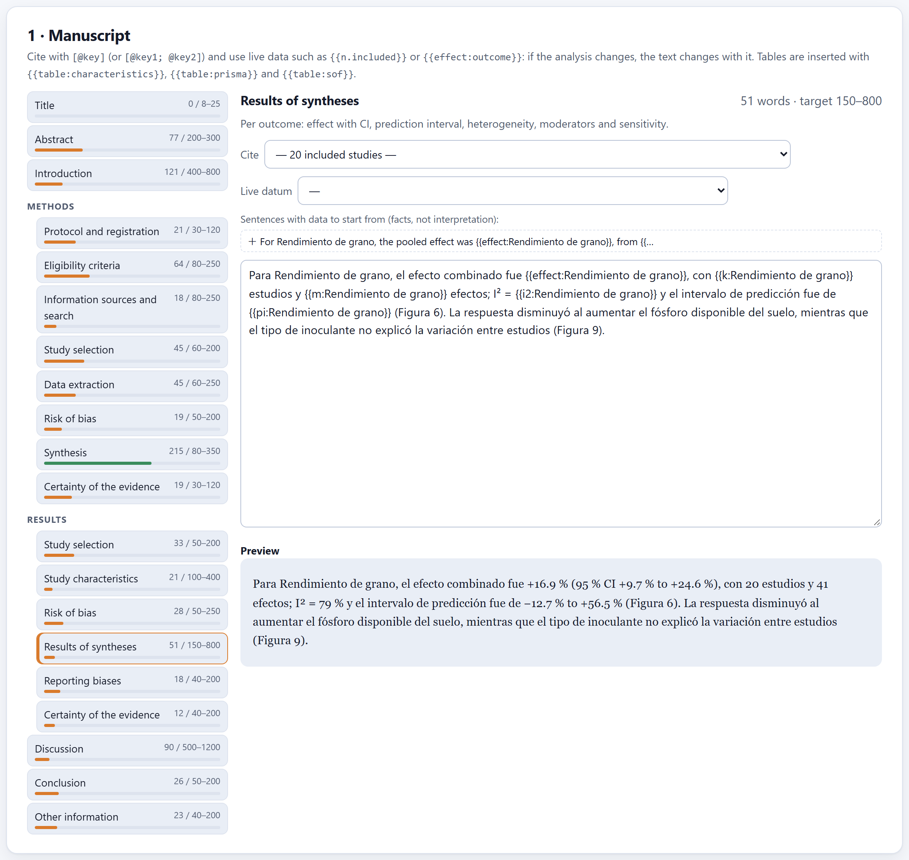
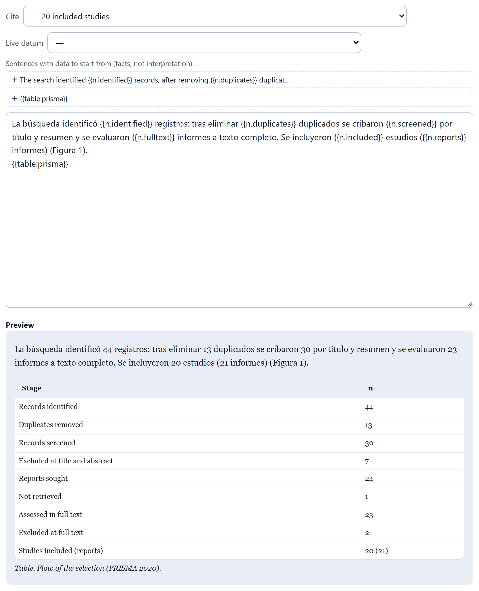
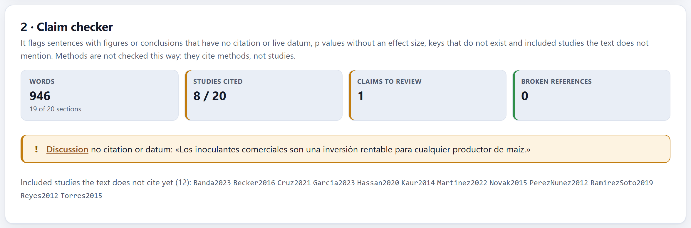
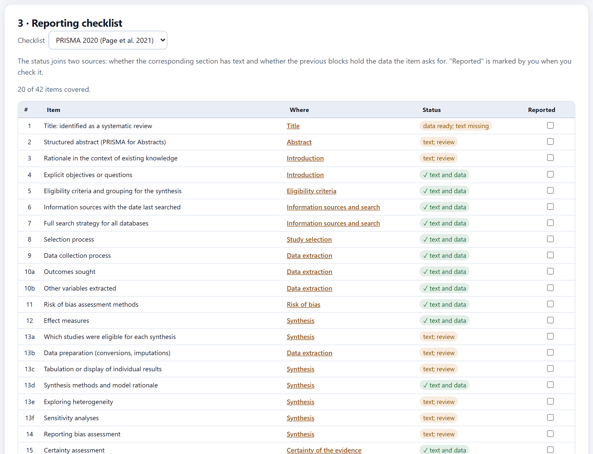
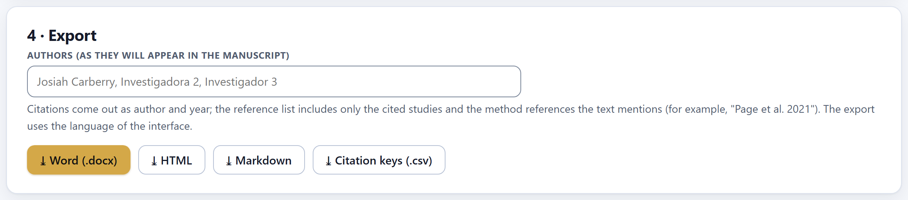

Spanish or English, with the ES · EN switch on the top bar. In this manual the names of buttons, fields and menus are written as they appear on screen in English, for example Start my review →.
How to cite the program
Barrera-Guzmán, L.Á. (2026). ReviewPro: a browser-based platform for narrative, scoping and systematic review articles and meta-analysis (Version 1.0.0) [Computer software].
How to cite this manual
Barrera-Guzmán, L.Á. (2026). ReviewPro: User’s Manual (1st English ed.). Distributed with ReviewPro, version 1.0.0.
The digital object identifier (DOI) will be added to both citations when version 1.0 is archived. Meanwhile, the citation of the program appears in the How to cite section of the app’s home page.
iPrivacy
ReviewPro runs entirely inside your browser. The bibliographic records you import, your screening decisions, the data you extract and the text you write are kept on your computer and are never sent to any server. The only things that leave the program are what you download: the project file, the tables, the figures, the manuscript and the package. Nor does the program need the internet: once copied, it works with the machine offline.
The illustrations, diagrams and screenshots in this manual are original: they were generated with the program itself or with code written for the manual. The example project used throughout—a meta-analysis of the effect of inoculation with arbuscular mycorrhizal fungi on maize grain yield—is fictitious: the records, studies, journals, data and reviewers were generated to teach how to use the program and do not describe real research. The only named person in it, Josiah Carberry, is the public test identity of the ORCID documentation; the DOIs in the example use the prefix 10.5555, reserved for testing.
The manual follows the same order as the app: ten numbered blocks, listed from top to bottom in the block list on the left of the screen. Each chapter explains one block and carries its number—Chapter 5 is Block 5, and its sections, figures and tables are numbered 5.1, 5.2…. Each one begins with the methodological idea the block needs, continues with what the screen does and how to read it, and ends with the messages the block can show and what to do about them. This introduction has no number: its sections run I.1, I.2….
A color for each block
The block’s color appears in the opening of its chapter, in the number of each section, in the tab on the edge of the page and in the contents, and it is the same as in the band on the cover. That way you can tell at a glance which part of the app you are in.
Block
Name in the app
What it does
1
Home
Home page, the four types of review with their route, a five-question assistant, two labs that really compute, the theory in plain language and the references
2
Protocol
The project, the question with its framework (PICO, PECO, PCC, SPIDER), the criteria, the outcomes, the sources, the methods, the team and the schedule; the check against PRISMA-P and registration in PROSPERO or OSF
3
Search
The string by concept blocks, written in five syntaxes; the log of each source; import from six formats; duplicates; the test with known articles
4
Screening
Title and abstract with keyboard shortcuts, prioritization by active learning, stopping rules, blind double screening, kappa and reconciliation
5
Full text
Where each PDF is, what was found by other routes, eligibility with its reason for exclusion and the PRISMA 2020 flow diagram built from the real counts
6
Extraction
The form you design, extraction by reviewer, the effect-size calculator, the comparison of double extraction and the final tables
7
Quality and bias
Risk of bias by domains with the agronomic checklist (or other tools), reconciliation, traffic-light plots, GRADE certainty and the summary of findings
8
Synthesis
The multilevel meta-analysis (or the average per study), heterogeneity, moderators, sensitivity and publication bias; and synthesis without meta-analysis
9
Writing
The manuscript by sections, with live citations and data, the claim checker, the PRISMA or SANRA checklist and export to Word, HTML and Markdown
10
Report
The project status, the numbered figures, the self-contained report and the .zip package that reproduces the whole review
Types of boxes
iNote
Clarifications and practical tips that save time.
!Important
What can change your conclusions if overlooked.
θTheory in brief
The idea behind a step or a computation, without unnecessary formulas.
▸Example
A case worked step by step with the program’s example project.
✓Decision rule
If the result falls in this case…
then this is the recommended reading.
They are guides for deciding and interpreting, not laws: what you know about the topic, the studies and your question always comes first.
Writing conventions
Written like this
Means
Start my review →
A button, checkbox or menu of the app, with its text exactly as it appears on screen in English.
Block 8›Publication bias
A path: open the first and look for the second inside it.
[@Cruz2021], {{n.included}}, .reviewpro.json
Something typed exactly as shown: a citation, a live datum, a file or field name.
lnRR · 95% CI · PI · I² · τ²
The log response ratio, the 95% confidence interval, the prediction interval, the relative heterogeneity and the between-study variance.
+16.9% · 0.156 · 1,480
Effects in lnRR are read as a percentage change; decimals use a point and thousands a comma, as in the app.
record · report · study
A record is a bibliographic entry; a report, a document (article, thesis, conference abstract); a study, a piece of research, which may have several reports. PRISMA 2020 distinguishes them and so does the app.
!The numbers in this manual
All the results in the text were obtained by opening the complete example project in the app—the Open the complete example button on the home page—and were copied from the screen. If you open it yourself, you should see the same numbers: the example is a fixed file and every computation is deterministic. Where a chapter uses something else—the example protocol of a scoping review, the labs of Block 1—it says so before giving the number.
In
Introduction · Before the blocks
Introduction to ReviewPro
What the program is, which types of review it covers, what it takes in and what it delivers, and how it is followed from beginning to end. It includes the five ideas that hold everything else up—decide before searching, everything is recorded, the model ranks but does not decide, the average is not enough, and the app guides but does not write—and an honest list of what the program does not do.
I.1What is ReviewPro?
I.2Four types of review
I.3Five ideas behind the manual
I.4What goes in and what comes out
I.5What you need and how to open it
I.6A tour of the interface
I.7The example project of the manual
I.8How a review is carried out
I.9What the program does not do
I.1What is ReviewPro?
ReviewPro is a platform for doing a review article from the question to the manuscript: it fixes the question and the protocol before searching, writes the search strings in the syntax of each database, gathers and cleans the records, orders screening so that the relevant ones come first, keeps count of every exclusion up to the PRISMA diagram, extracts the data and computes the effect sizes, assesses risk of bias and certainty, combines the studies—with or without meta-analysis—and accompanies the writing up to a Word document with its citations and references.
Everything happens inside the browser. There is nothing to install, no programming is needed and the data never leave the computer. It is written for researchers, teachers and graduate students in the agricultural and biological sciences, but it works for any field: it knows that most agronomic reviews combine field experiments with several sites or seasons per study, that means come with the LSD or the standard error instead of the standard deviation, that the risk of bias of a field trial is not assessed with the same checklist as a clinical trial, and that what readers need to know is not only whether a treatment works on average, but what would happen at a new site.
Figure I.1. The app’s home page (Block 1). On the left, the list of the ten blocks; in the center, the buttons to start a review, choose the type, try the labs, open the complete example and see how to cite.
I.2Four types of review
Not every review asks for the same things. The app distinguishes four, and the type you choose in the protocol decides which question framework is recommended, which reporting guideline is followed, which blocks are required and what the manuscript skeleton looks like (Grant and Booth 2009).
Type
When it suits
Reporting guideline
Blocks required
Typical time
Narrative
State of the art, conceptual framework of a project, an emerging or very broad topic, a debate between schools.
SANRA (Baethge et al. 2019)
2, 3, 6, 8, 9, 10 optional 4, 5, 7
1 to 3 months
Scoping
Mapping a field before a systematic review, identifying concepts and methods, detecting research gaps.
PRISMA-ScR (Tricco et al. 2018)
2 to 6, 8, 9, 10 optional 7
3 to 9 months
Systematic
A focused question (PICO or PECO) that asks for a defensible, auditable answer.
PRISMA 2020 (Page et al. 2021)
2 to 10
6 to 18 months
Meta-analysis
A systematic review whose studies report comparable effects (means, SDs and n; counts; correlations).
PRISMA 2020 + GRADE certainty
2 to 10
6 to 18 months
θTheory in brief · what makes a review “systematic”
It is not the number of articles nor the tone. A review is systematic when another person, with your protocol, would arrive at the same studies: the question and the criteria are fixed before searching, the search is documented to the character, every exclusion has a recorded reason and the quality of each study is assessed with a declared tool. A scoping review shares that rigor in the search, but its product is a map, not an answer. Meta-analysis is a statistical technique applied within a systematic review when the effects are comparable; without the systematic review underneath, it only averages a biased sample with precision.
I.3Five ideas behind the manual
1 · Decide before searching
The question, the criteria, the outcomes, the moderators and the synthesis plan are written in the protocol (Block 2) before seeing a single result. This is what keeps the review from bending to what it finds, and it is the first thing a skeptical reviewer looks for.
2 · Everything is recorded
Every string with its date, every merged duplicate, every decision of every reviewer with its reason, every extracted value and where it came from, every bias judgment. From there come the numbers in the PRISMA diagram and the package that reproduces the review.
3 · The model ranks, it does not decide
Prioritized screening learns from your decisions and brings to the top what resembles what you included, but it excludes nothing. Stopping before reading everything is your decision, with a declared rule and a check.
4 · The average is not enough
A positive, significant mean effect can coexist with sites where the treatment loses. That is why the app always reports the heterogeneity and the prediction interval, and the GRADE certainty for each outcome.
5 · The app guides, it does not write
It says what each section needs, offers the citations and the numbers from the analysis and flags unsupported claims, but the interpretive text is yours. Nothing in ReviewPro generates prose for you.
I.4What goes in and what comes out
What the app reads
Exports from citation databases in RIS, BibTeX, two-letter tagged format, MEDLINE, plain-text EndNote and delimited text (CSV or tab-separated) with columns you assign.
Screening decisions from another reviewer (exchange file).
A .reviewpro.json project saved earlier, yours or a co-author’s.
Data you type or paste: means, standard deviations, replicates, test statistics, p values.
What the app delivers
The protocol in HTML and the registration fields for PROSPERO or OSF.
The search strings and their log; unique records in RIS or CSV.
The screening decisions, the PRISMA 2020 flow diagram and its counts.
The tables of characteristics and of effects (CSV), the summary of findings and the meta-analysis results.
The manuscript in Word, HTML and Markdown; the included studies in RIS and BibTeX.
Figures in PNG, JPG or SVG, the report and the .zip package.
I.5What you need and how to open it
A modern browser—any Chromium-based browser or Firefox, from 2023 onward—and the program folder. There are two ways to open it:
Double-click index.html
The normal way. The app opens from the disk and works in full, offline.
Double-click Open ReviewPro.bat
On Windows, it starts a small local server and opens http://localhost:9550. It is only needed if your browser blocks something when opening local files, or to run the program’s test page.
The project saves itself to the browser’s storage every time you change something; the bar of Block 2›Project says when that last happened. But that storage lives in that browser on that computer: if you clear your browsing data, switch browsers or open the app on another machine, it will not be there.
!Save the project file
Download the project with ⤓ Save file at the end of each working session and keep it next to your manuscript. It is a single .reviewpro.json file with everything: the protocol, the search, every decision, the extraction, the appraisal, the synthesis and the text. With it you pick up the work on another computer, share it with a co-author or attach it as supplementary material.
I.6A tour of the interface
Figure I.2. The interface with the example project open in Block 2. The top bar stays fixed as you scroll; each block opens with its number, its title and a line that says what it is for, and is organized in numbered cards.
Element
What it does
Logo
Returns to the home page (Block 1).
Palette (first round button)
Opens the figure studio: palette, font, line widths and background of every chart in the app at once, on screen and in what is exported.
ES · EN
The language of the whole interface. The text you write is not translated; exports (report, manuscript) come out in the active language.
Sun / moon
Light or dark theme. Exported figures use the theme you choose in their menu, not the one on screen.
Block list
The ten blocks, in the column on the left. All are always available: you can go back to correct something, and the following blocks are recomputed when you open them.
⤓ button of each figure
Appears when you hover over the corner of a chart: it exports that figure as PNG, JPG or SVG, with its title and its note.
If you open the file with the address ending in #b5 (or any other number), the app goes straight to that block; that way you can save a bookmark to carry on where you left off.
I.7The example project of the manual
The Open the complete example button on the home page loads a review already carried out from start to finish, the same one in every figure of this manual. If you have a project open, the app asks before replacing it: save it first if you want to keep it.
▸Example · mycorrhizae and maize yield
Question: in field-grown maize, what effect does inoculation with arbuscular mycorrhizal fungi have on grain yield, compared with the same management without inoculation? It is a meta-analysis with the PICOS framework. Search: the six test files of Block 3—three databases, a thesis repository, an institutional repository and a hand search—44 records identified and 13 duplicates. Screening: two reviewers with independent, reconciled decisions. Included: 20 studies in 21 reports, with 41 comparisons (sites or seasons) of yield. Result: yield increased by +16.9% (95% CI +9.7% to +24.6%), with I² = 79% and a prediction interval from −12.7% to +56.5%; the certainty of the evidence is very low. Three studies still have unreconciled bias judgments and the manuscript is a draft: this way the example also shows what pending work looks like.
iThe other examples
Block 2 also has example protocols for each type of review (the Example menu and the Load example button), which fill only the protocol; Block 3 loads the six test files with Load the test files; and the labs of Block 1 generate fictitious literatures from a seed. Everything is invented and the app says so every time.
I.8How a review is carried out
Choose the type and write the protocol (Block 2). Check it with the PRISMA-P checklist the app carries and register it before searching.
Build the search (Block 3): the concept blocks, the string in the syntax of each database, the date of each search. Run the string in each database, export the results and import them. Review the duplicates.
Screen titles and abstracts (Block 4) with two reviewers; measure agreement in a pilot, continue with prioritization and stop with the declared rule.
Retrieve and assess the full texts (Block 5), with the reason for each exclusion. The PRISMA diagram builds itself.
Extract the data (Block 6) with the form, compute the effects and compare the double extraction.
Assess risk of bias and certainty (Block 7).
Synthesize (Block 8): meta-analysis, moderators, sensitivity and publication bias, or synthesis without meta-analysis.
Write (Block 9) on the skeleton, with live citations and data, until the checker and the reporting checklist come out clean.
Deliver (Block 10): figures, report and package.
The order is not a prison: a real review goes back and forth. If while extracting you discover that a criterion was ambiguous, you document it as an amendment in the protocol and carry on; if you add a study from a hand search, it enters through Block 5 and the diagram counts it separately.
I.9What the program does not do
It does not search the databases for you
It writes the string in the syntax of each database, but the search is run on each database’s site, with your access, and the results are imported. That way the search is documented exactly as it was done.
It does not read the PDFs
It keeps where each one is on your computer and opens it, but the data are extracted by reading, not guessed from the file.
It does not decide what is included
It orders screening and suggests GRADE judgments from the data; the decision and its justification always belong to the reviewers.
It does not write
Neither the introduction nor the discussion. It gives the skeleton, the citations, the numbers and the review of claims.
It does not do every meta-analysis
It covers two- and three-level random-effects models with moderators. It does not do network, diagnostic-accuracy, Bayesian or individual-participant-data meta-analysis; if your question calls for them, export the effects table and continue with specialized statistical software.
It does not replace expert judgment
A high I², an asymmetric funnel or low certainty are signals to think about, not verdicts. The manual gives decision rules; what you know about your topic comes first.
1
Block 1 · Home
Home: the types, the labs and the theory
The home page is not decoration: it helps you choose the type of review, shows which blocks each one asks for and carries two labs that use the same engines as Blocks 4 and 8 on fictitious literatures whose truth they know. They serve to understand, before risking your own review, what prioritized screening saves and what stopping costs, and how far a meta-analysis can land from the truth.
1.1The home page and its buttons
1.2Four types of review, four routes
1.3The five-question assistant
1.4The prioritized screening lab
1.5The meta-analysis lab
1.6What is inside, how it is made and the theory
1.7How to cite and the references
1.1The home page and its buttons
The app always opens on the home page (Figure I.1 of the introduction). Below the title there are five buttons that lead where you almost always want to go first.
Button
Where it leads
Start my review →
To Block 2, to the protocol that is open (or to a new one of the type chosen on the home page).
Which type of review suits me?
To the cards of the four types and the five-question assistant (Sections 1.2 and 1.3).
Try the labs
To the two labs (Sections 1.4 and 1.5).
Open the complete example
Loads the manual’s example project and goes to Block 2 (Section I.7).
How to cite
To the citation of the program (Section 1.7).
The four tags below sum up the program’s commitments: it runs entirely in the browser, the records never leave the computer, it is in Spanish and English, and it follows PRISMA 2020 and PRISMA-ScR. The fifth says that the meta-analysis engine was checked against published examples: the BCG vaccine data set (Colditz et al. 1994) reproduces τ² = 0.3132 and μ̂ = −0.7145 with REML, the reference values in the literature.
1.2Four types of review, four routes
Figure 1.1. The four cards and the route of the chosen type. Here, the meta-analysis: all nine working blocks are required.
Each card sums up the type in seven lines: its typical question, when it suits, what the search is like, what happens with the quality of the studies, how it is synthesized, which reporting guideline it follows and how long it usually takes. When you pick a card, the band below shows its route: each block marked as required, optional or not applicable.
The card chosen on the home page is only a preference: it is used as the type of a new protocol. The type that rules is the one set in Block 2›1 · Type of review, and on it depend the question framework, the manuscript skeleton, the checklist of Block 9 and the project status of Block 10. All blocks stay open whatever the type: a narrative review can use the screening of Block 4 if it suits it.
1.3The five-question assistant
The five questions are: what you want the review to achieve, how narrow the question is, whether the studies report comparable numerical results, whether the journal or committee requires an exhaustive, reproducible search, and how much time you have. With all five answered, the assistant proposes a type and lists its reasons, so that you can disagree knowing why. The See its route through the blocks button picks that card and scrolls down to its route.
✓Decision rule · the logic of the assistant
If you want to map what evidence exists
then scoping: mapping is not estimating an effect.
If you want to discuss and interpret a topic
then narrative; scoping if you are also required to do a reproducible search.
If you want to answer whether something works, but the question is broad
then scoping first: a broad question is not answered with a number.
If the question is narrow and the effects are comparable
then meta-analysis.
If the question is narrow and you do not yet know whether the data will be comparable, or they are not
then systematic, which can grow into a meta-analysis at extraction or stay as a structured narrative synthesis.
If you have less than three months for a systematic review
then the assistant warns you: narrow the question or the sources and declare it as a limitation.
Figure 1.2. The assistant recommends a systematic review for a narrow question where it is not yet known whether the data will be comparable, and says why.
1.4The prioritized screening lab
The lab writes a pile of fictitious records on one question—does inoculation with mycorrhizae increase maize yield in the field?—and knows which ones are relevant. It mixes the relevant ones with neighbors that resemble them (mycorrhizae in the greenhouse, maize fertilization, fungal diseases) and with distant topics. The simulated reviewer knows one relevant and one irrelevant record beforehand; from there, the same model that Block 4 uses re-ranks the pile after each batch of decisions, and the lab also screens the same pile in random order for comparison.
Figure 1.3. The lab with its starting values. The blue curve (prioritized) rises almost vertically; the gray one (random) advances diagonally. The red line marks where the rule stopped, and on the right is the flow diagram of the simulated review.
Control
What it changes
Records
The size of the pile: 500, 1,000 or 2,000.
Batch
How many decisions are made before the model re-ranks (1, 5, 10 or 25). Small batches learn faster.
Stopping rule
50, 100 or 200 irrelevant in a row; the knee of the curve with ρ ≥ 6; or the adjusted knee, with ρ ≥ 156 − relevant found (Cormack and Grossman 2016).
Prevalence of relevant
What fraction of the pile is relevant (3% at the start). Real reviews usually run between 1 and 5%.
Difficulty of the pile
How much the neighbors resemble the relevant records: easy, medium or hard.
Seed · ↻ Another pile
The same seed gives the same pile; the button draws another.
How to read the indicators
Read for 95 %
How many records had to be read, in prioritized order, to find 95% of the relevant ones.
WSS@95
The work saved: the fraction of the pile that is not read to reach 95% of the relevant records, minus the 5% that chance would save (Cohen et al. 2006).
RRF@10
The fraction of the relevant records already found after reading the first 10% of the pile.
Stopping rule and Recall at stop
Where the chosen rule would have stopped and what fraction of the relevant records had been found there. The box turns red if relevant records were missed.
WSS@95 = (N − n₉₅) / N − 0.05 · with N = 1,000 and n₉₅ = 53: 0.947 − 0.05 = 0.897
Figure 1.4. What the model learned: the words that push toward “relevant” and toward “irrelevant”, and the first records it presented, with the words that weighed most highlighted.
▸Example · the starting pile (seed 7)
Of 1,000 records, 30 are relevant (3.0%). In prioritized order, 53 readings are enough to find 95% of them (5.3% of the pile): WSS@95 = 89.7%. After reading 10% of the pile all of them had been found (RRF@10 = 100%). The rule of 100 irrelevant in a row stopped at record 154 without missing any. Raise the difficulty or lower the prevalence and repeat: you will see that the rule that was safe with this pile starts leaving relevant records behind.
θTheory in brief · why prioritized screening does not decide for you
The model is a naive Bayes classifier on words weighted by TF-IDF (Salton and Buckley 1988; Rennie et al. 2003), retrained with each batch: active learning in the line of the work of Yu et al. (2018) and van de Schoot et al. (2021). It excludes nothing; it only changes the order in which you see the records. Because the relevant records appear early, there comes a point where only irrelevant ones turn up, and that is where a stopping rule declared in the protocol comes in. The cost is explicit: stopping before the end can leave some relevant record out. That is why the lab shows the recall at stop, and why Block 4 recommends checking with a random sample of the unread records.
1.5The meta-analysis lab
The second lab generates fictitious field trials of an input on yield. Each trial has its own true effect, drawn from a distribution with mean True effect and spread Heterogeneity τ; its plots add sampling error. The effect is measured as a response ratio (the log of the treated mean over the control mean) and read as a percentage change. The lab then combines the trials with the same engine as Block 8 and shows you the distance between the truth and the estimate.
Figure 1.5. Fourteen trials of an input with a true mean effect of +10%. The estimate, +5.1%, lands far from the truth and its interval includes zero: with few heterogeneous trials, chance weighs heavily.
Control
What it changes
τ² estimator
REML (restricted maximum likelihood), DerSimonian–Laird, Paule–Mandel, Hedges or maximum likelihood: how the between-trial variance is estimated.
Knapp–Hartung
Intervals with the t distribution and an adjustment of the variance; more honest with few studies.
Publication bias
Hides the small trials that “did not work out”: the funnel loses a corner and the average inflates.
Number of trials, True effect, Heterogeneity τ, Plots per treatment
The literature that is generated. Next to τ its equivalent as a percentage change is shown (0.08 ≈ ±17%).
The six indicators are the pooled effect with its 95% CI, the laboratory’s truth, the common (fixed) effect, τ² with I² and the Q test, the prediction interval and Egger’s asymmetry test. Below, a paragraph reads the result in words: with how many trials, how large the heterogeneity is and what the prediction interval says.
✓Decision rule · four experiments worth doing
If you raise τ with the same number of trials
then the CI widens a little, but the prediction interval a lot: the average stays, what changes is what will happen at a new site.
If you turn on publication bias
then the pooled effect rises above the truth and the funnel loses the corner of small trials with low effects.
If you go down to 5 trials and toggle Knapp–Hartung
then you will see how much too narrow the CI becomes with the z test: with few studies, use t.
If you set τ to zero
then the common effect and the random effects coincide, and I² drops toward zero.
1.6What is inside, how it is made and the theory
What’s inside describes the nine working blocks in one card each; How it is made, the six principles of the program: everything on your computer, it guides and does not write, every decision is recorded, reproducible, four types with one route, and verified engines. The theory, in plain language gathers five explanations with their illustration, meant to be read before opening the first database:
What makes a review “systematic”—reproducibility, not the number of articles—and how scoping reviews and meta-analysis differ.
Why prioritized screening does not decide for you, with the definition of WSS@95.
Common effect or random effects: a single true effect or a distribution of effects, one per study, with the formula of the weights.
Heterogeneity: τ², I² and the prediction interval, and why I² = 80% does not mean “a lot of variation” but “little sampling error by comparison”.
Publication bias and the funnel, with the limits of Egger’s test.
θTheory in brief · the three formulas of the home page
Each study weighs by its precision, reduced by τ²; I² compares τ² with the typical sampling variance s², and the prediction interval (Higgins et al. 2009) adds the uncertainty of the average and that of the sites.
1.7How to cite and the references
The How to cite section carries the citation of the program in Spanish or English, depending on the active language, with its version number, and the Copy the citation button. If ReviewPro helped you with an article or a thesis, cite the program and the original works of the methods you used: the methods paragraph of Block 8 names them by author and year, and Block 9 adds their entries to the reference list when you cite them.
References behind the calculations gathers, by topic, the works each method comes from; Appendix E repeats them.
iThe messages of this block
Block 1 hardly warns: the assistant says “N answer(s) missing to recommend a type.” until you answer all five, and the screening lab says “the rule never fired: everything was read” when the chosen stopping rule never triggers with that pile. Nothing you do here touches your project: the labs work with their own fictitious literatures.
2
Block 2 · Protocol
The protocol: what is decided before searching
The protocol fixes the question, the criteria, the outcomes, the sources, the methods and who does what, before seeing a single result. It is what keeps the review from bending to what it finds. The block also saves and opens the project, checks the protocol against the PRISMA-P checklist, drafts the registration fields for PROSPERO or OSF and downloads the protocol document.
2.1The project: new, open, save and examples
2.2The type of review
2.3Title and question
2.4Eligibility criteria
2.5Outcomes, moderators and sources
2.6Methods
2.7Team, funding and schedule
2.8The protocol check and PRISMA-P
2.9Registration and the protocol document
2.1The project: new, open, save and examples
The first card of the block, Project (Figure I.2), handles the whole project, not just the protocol. Its colored bar measures how complete the protocol is—in the example, “100% of the protocol · 13 sections complete, 0 to review, 0 missing”—and on the right it says when it was last saved in the browser.
Button
What it does
New
Starts an empty project of the same type as the open one. It asks for confirmation, because everything open is replaced: save it first.
Open file…
Opens a .reviewpro.json: yours from another session or a co-author’s.
⤓ Save file
Downloads the complete project with the title as the file name.
Example · Load example
Fills only the protocol with one of three examples: Meta-analysis: mycorrhizae and maize, Scoping: agroecology in coffee or Narrative: mycorrhizae and phosphorus. They let you see a complete protocol of each type before writing yours.
iTwo co-authors, one project
The project file is the way to work as a team: whoever writes the protocol saves it and shares it; whoever screens opens that copy. Each reviewer’s screening decisions, on the other hand, are exchanged with a file of their own from Block 4, so that each person screens blind on their own computer (Section 4.5).
2.2The type of review
Figure 2.1. The chosen type of review sets the route: for a meta-analysis, Blocks 2 to 10 are required and the reporting guideline is PRISMA 2020 with GRADE certainty.
This is the type that rules the whole project (Section 1.2). Changing it later is possible, but it has consequences: it changes the recommended question framework, the default bias tool, the synthesis approach, the manuscript skeleton and the reporting checklist. The data you have already entered are not lost.
2.3Title and question
Figure 2.2. The example question with the PICOS framework: the app writes it from the five elements and checks that none is missing.
The title should say what type of review it is (“systematic review and meta-analysis”, “scoping review”): PRISMA 2020 asks for it in its first item, and Block 9 checks it. Then you choose the question framework; the app marks the one that corresponds to the type as recommended.
Framework
Elements
What for
PICO
Population or system · Intervention · Comparator · Outcome
Interventions and treatments: does it work, how much?
PICOS
PICO + Study design
PICO with the study design fixed in advance (recommended for meta-analysis)
PECO
Population or system · Exposure · Comparator · Outcome
Exposures that are not assigned: climate, pollution, observed management
PCC
Population · Concept · Context
Scoping reviews: mapping concepts in a context
SPIDER
Sample · Phenomenon of interest · Design · Evaluation · Research type
Qualitative or mixed-methods evidence
Free question
A single question written by hand
Narrative reviews
Each element carries a reminder of what goes there. With them, the app writes the question in a box; if you prefer to write it yourself, open I prefer to word it myself and what you write replaces the drafted one. Below, a message checks the question: “The question has all its elements.”, or else what is missing or what does not fit the type.
✓Decision rule · the messages about the question
If a systematic review or a meta-analysis uses a free question or PCC
then the app asks for a focused question: PICO, PICOS, PECO or SPIDER.
If a meta-analysis has no comparator
then there is no effect to pool: define what it is measured against.
If a meta-analysis uses SPIDER
then the app warns that SPIDER is for qualitative evidence.
If a scoping review uses PICO
then it works if you already know which intervention to map; the usual choice is PCC.
The rationale answers what existing reviews do not settle; the objectives, what will be estimated or mapped; the hypothesis is optional; the keywords are separated by semicolons. The elements of the question—not the keywords—seed the concept blocks of the search (Section 3.1).
2.4Eligibility criteria
Figure 2.3. The criteria of the example. Each one carries an ID—I1… for inclusion, E1… for exclusion—and the facet of the question it answers.
The ID is not decoration: in screening and in full text, every exclusion is recorded with the ID of the criterion behind it, and the PRISMA diagram counts the reasons by itself. That is why each exclusion criterion should be a single one and verifiable: “experiments in pots, greenhouses or growth chambers” is decided by reading; “low-quality studies” is not.
Propose from the question
Writes an inclusion criterion for each element of the question, plus the usual exclusions. It is a starting point: edit them.
+ inclusion · + exclusion
Add a criterion; the ✕ removes it and the IDs are renumbered.
Facet
The element of the question (P, I, C, O, S…) or a general category: publication, data, duplicates.
Years, languages, publication types
The period (an empty final year means “to the present”), the accepted languages and which types count: peer-reviewed articles, theses, technical reports, preprints, books and chapters, conference proceedings.
!Restricting by language or by publication type is a decision with a cost
Leaving out theses, technical reports and conference abstracts excludes precisely the literature where null results hide, and increases the risk of publication bias that Block 8 will try to measure. If you decide to exclude them, write it down and justify it; if you include them, the search in Block 3 will have to go looking for them.
2.5Outcomes, moderators and sources
Figure 2.4. One primary outcome (yield, in t/ha at 14% moisture) and two secondary ones, and the moderators declared in advance.
Each outcome carries its name, its role—primary or secondary—and how it is measured. The primary outcome decides the conclusion and is fixed before seeing the data; changing it afterward is the most common form of selective reporting. The names you write here come back in Block 6 (which outcome each effect belongs to) and in Block 7 (one GRADE row per outcome). The moderators are the variables with which you plan to explain the heterogeneity; declaring them here is what separates an exploration from a fishing expedition (Section 8.3).
Figure 2.5. The sources of the example, each with its kind—database, grey literature or other—and its coverage.
The sources are listed by name, with their kind and the years you will cover; the kind decides in which column of the PRISMA diagram their records fall (databases and registers, or other methods). For that, the name you give each file imported in Block 3 must be the same as that of its source here; a file whose source is not on this list is counted as a database. The fields for grey literature and other strategies (reference lists, forward citations, consulting experts) complete item 7 of PRISMA-P. The strings are built in Block 3.
2.6Methods
Figure 2.6. The methods of the example. What is chosen here becomes the starting value of Blocks 4 to 8.
Section
What is declared
Used by
Study selection
Reviewers per record, pilot size, minimum agreement (kappa), how disagreements are resolved (by discussion or by a third reviewer), whether screening is prioritized and with which stopping rule, whether it is verified with a sample of the unread records, and whether the full text is assessed in duplicate.
Blocks 4 and 5
Data extraction
Whether it is done in duplicate and independently, whether authors will be contacted when data are missing, and the items to extract.
Block 6
Quality and certainty
The risk-of-bias tool—the quality checklist for agronomic experiments, RoB 2, ROBINS-I, Newcastle–Ottawa, a checklist for qualitative studies or none—and whether certainty will be rated with GRADE.
Block 7
Synthesis
The approach (thematic, charting tables, SWiM or meta-analysis), the effect measure, the τ² estimator, Knapp–Hartung, whether publication bias is explored, the subgroups, the sensitivity analyses and notes.
Blocks 6 and 8
Effect measure
When
Response ratio, ln(RR)
Proportional change between means of the same positive variable (yield, biomass): the most commonly used in agronomy and ecology (Hedges et al. 1999).
Standardized mean difference (Hedges’ g)
Means on different scales across studies.
Mean difference
All studies in the same unit.
Risk ratio, odds ratio, risk difference
Counts: diseased and healthy plants, plots with and without damage.
Correlation (Fisher’s z)
Associations between two continuous variables.
2.7Team, funding and schedule
Figure 2.7. The team of the example, with each author’s roles, the contact author and the validated ORCID (✓), and the dates of the review.
Each author carries a name, affiliation, e-mail and ORCID; the app validates the ORCID check digit and puts a ✓ when it is correct. The roles—conceptualization, methodology, search, screening, extraction, analysis, writing, supervision and guarantor—are marked with a click, and one of the authors is the contact author. Funding and conflicts of interest are always declared, even if “none”: PRISMA 2020 asks for them and the live data {{funding}} and {{coi}} of Block 9 copy them into the manuscript.
With the start and end dates, Propose schedule divides the time into phases with the typical proportions for the type of review—in a systematic review, for example, title and abstract screening takes about one sixth—and draws the bar chart. The phases and their dates can be edited by hand.
Figure 2.8. The proposed schedule for a one-year meta-analysis; it is exported like any other figure.
2.8The protocol check and PRISMA-P
Figure 2.9. The protocol check of the example: the thirteen sections complete and, in PRISMA-P 2015, 25 of 26 items met; the registration item is left for after registering.
The card brings together two checks. At the top, each section the type of review asks for, with its status—complete, to review or missing—and, when something is missing, what to do (“Declare both, even if “none”.”, “Explain why this review is needed (what existing ones do not settle).”). Below, the PRISMA-P 2015 checklist (Moher et al. 2015; Shamseer et al. 2015), item by item: what it asks, where in the protocol it is met and its status. Some items are met in later blocks—the registration number, for example, only exists after registering—and are marked as such, not as missing.
2.9Registration and the protocol document
Figure 2.10. The PROSPERO fields drafted in English from the protocol, with the scope and language messages. Below, the registration number still to be filled in and the downloads.
Each registration field is drafted from what you wrote above, with a Copy button to paste it into the registry’s form. You choose the registry—PROSPERO or OSF—and the language of the fields. The app warns about two things: the scope of each registry and whether your texts are in a language other than the registry’s.
✓Decision rule · which registry
If the review is scoping or narrative
then OSF: PROSPERO does not register them.
If it is systematic with an outcome relevant to health (human or animal, including food)
then PROSPERO is an option; check that your question qualifies.
If it is systematic on an agronomic or environmental topic without a health outcome
then OSF, which registers any type of review on any topic.
If the registry asks for English and your protocol is in Spanish
then translate the title, the question and the criteria before copying them; the app does not translate your texts.
Registry forms change: check the current fields at the time of submission.
When you register, note the registration number (for example, CRD42026… or osf.io/…): with it you meet item 2 of PRISMA-P, item 24a of PRISMA 2020 and the live datum {{reg}} of the manuscript. The amendments field says how changes will be documented; the dissemination field, where it will be published. ⤓ Protocol document (.html) downloads the complete protocol, ready to print or attach; ⤓ Registration fields (.md), the fields as text.
iThe messages of this block
Those about the question framework (Section 2.3), those for each incomplete section (2.8) and those about registration (2.9). None of them stops you from moving on: the protocol can be amended, and a real review does so. What matters is that each change is dated and justified in the amendments field (How amendments will be documented) and reported in the article (item 24c of PRISMA 2020).
3
Block 3 · Search
Search and records
The strategy is built from concept blocks and written in the syntax of each kind of database; the search is run in each database and its results are imported here, in any of six formats. Duplicates are then merged, with your decision in the doubtful cases, and you check that the string finds the studies you already know exist. What comes out is the list of unique records to be screened in Block 4.
3.1The strategy by concept blocks
3.2The string in five syntaxes
3.3The search log
3.4Importing the records
3.5Duplicates
3.6Testing the strategy
3.7Summary and export
3.1The strategy by concept blocks
A systematic search is built with one block per concept of the question—the population, the intervention, the outcome—and each block gathers every way an author might have written that concept: synonyms, spelling variants, scientific names, acronyms and terms in other languages. Within a block, terms are joined with OR; blocks are joined with AND.
Figure 3.1. The three blocks of the example and the resulting string in the field-function syntax. Truncation with an asterisk (mycorrhiz*) picks up mycorrhiza, mycorrhizal, mycorrhizae…
Propose blocks from the question
Creates one block for each element of the Block 2 question that is searched for—in PICO, the population, the intervention and the outcome—with the meaningful words of that element as the first terms. It is a draft: add the synonyms.
+ block
Adds an empty block; its name is up to you.
Field of each block
Title, abstract and keywords (the usual choice), Title only (more precise, less sensitive) or All fields.
Terms
Type them and confirm with Enter. A phrase of several words is put in quotation marks automatically. * truncates and ? replaces a single character. Clicking a chip turns it off without deleting it (useful for testing); the ✕ deletes it.
NOT
Excluding terms, subtracted from everything else. Use it with care: a poorly thought-out NOT removes relevant studies that mention the excluded term in passing.
θTheory in brief · why the comparator is almost never a block
An AND requires all blocks to appear in the record. Studies hardly ever name their control in the title or abstract (“uninoculated,” “absolute control”), so a comparator block would discard many relevant ones. The search must be sensitive—it must not lose studies—even if it brings noise: Block 4 screening takes care of the noise, but nothing recovers what the search did not bring in.
3.2The string in five syntaxes
Bibliographic databases do not speak the same language. The app writes the same blocks in five syntaxes, described by their form rather than by a product; the help pages of each database tell you which one it uses.
Syntax
What it looks like
Field function
TITLE-ABS-KEY(maize OR "zea mays")
Tag with equals sign
TS=(maize OR "zea mays")
Bracketed tag
maize[tiab] OR "zea mays"[tiab]
Numbered lines with suffix
1 (maize or zea mays).ti,ab,kw.—one line per block and a final line that combines them
No fields
maize OR "zea mays"—for general academic search engines
The Copy button puts the string on the clipboard so you can paste it into the database. Below it, the app warns you about what to watch for in each syntax; for example, “General academic search engines do not truncate: the asterisk was removed. Write out the variants that matter (singular and plural).”
3.3The search log
Figure 3.2. The search log of the example. For every source, the hits the database gave match the records imported (✓).
Every source declared in the protocol, and every source of an imported file, has its own row. Record there the date of the search and how many hits the database gave: PRISMA 2020 (item 6) and its extension for searches, PRISMA-S, ask you to report it. The Imported column counts the records that actually came in; if it does not match what the database gave, ≠ appears: many databases export in batches, and an incomplete export is the most common and most silent error in a review.
The kind of each source (database, gray literature or other methods) is the same as in Block 2 and can be changed here; the syntax is chosen per source, and Copy string copies the string written in that syntax. The most recent date in the log is the live field {{search.date}} of Block 9.
3.4Importing the records
Figure 3.3. The six test files imported, each one in a different format. For the delimited table, the app states which column it recognized for each field.
Run the string in the database and export all the results with title, authors, year, journal, abstract, keywords and DOI.
In the app, choose the Source the files come from.
Click Choose files… or drag them onto the dashed zone. The format is recognized automatically.
Format
How it is recognized
RIS
Two-letter tags with hyphens: TY - … ER -
BibTeX
@article{…} entries, with LaTeX accents that are converted
Two-letter tagged text
Tags without a hyphen, of the PT … ER kind, exported by citation indexes
MEDLINE
Tags of the PMID- … kind
Percent tags
%T, %A… from reference managers
Delimited table (CSV or TSV)
Headers in Spanish or English; the separator (comma, semicolon or tab) and the columns are detected automatically
The No abstract column counts the records that arrived without an abstract: they are screened on the title alone, and it is worth knowing how many there are. Load the test files imports the six fictitious files of the example, and ⤓ Download them saves them so you can see what each format looks like inside.
3.5Duplicates
The same article appears in several databases, and the same experiment sometimes in a thesis, a conference paper and an article. The app merges them at two levels:
Certain matches
Same DOI, or the same normalized title with the same year (±1) and a compatible first author. They are merged automatically.
Pairs to decide
Nearly identical titles (their similarity is shown as a %), or identical ones with another year or another author. You decide them with Same study or Different.
Figure 3.4. The duplicates of the example. Above, a pair with the same title but other authors and another year: they are different studies. Below, a typo in the title (“compnents”) and a missing DOI: it is the same study.
In each pair, whatever differs between the two records is highlighted. When records are merged, the most complete one is kept and the others fill its gaps (a DOI, an abstract). See the N automatic merges shows what was merged automatically, in case you want to check it.
!When in doubt, “Different”
A wrong merge loses a study forever: nobody sees it again. A duplicate that slips through, on the other hand, reappears in screening and is excluded there with the reason “duplicate.” That is why the app never merges a doubtful case on its own.
iPairs and records
The merged card counts records removed, and its note counts pairs. They do not always agree: if a study appears in three databases, its three copies form three pairs, but two records are removed. In the example, 13 certain pairs and one confirmed pair removed 13 records: 43 imported, 30 unique.
3.6Testing the strategy
Figure 3.5. The string of the example, run on the 30 unique records: each block and the whole string, and the four known studies, all retrieved.
The string is run right here on the unique records, in title, abstract and keywords, to see how much each block cuts. It is normal for the string to retrieve fewer records than were imported: each database also searches fields that are not visible here, or its controlled vocabulary. Look at those records before concluding that they are surplus.
The most useful part of this card is the list of studies the search must find: those the team already knows before searching, one per line, by DOI or by title. If one of them does not appear, the strategy is missing a term, and the app reports the sensitivity against those known studies.
✓Decision rule · before accepting the search
If a known study is not retrieved
then read it, find how it names each concept and add that term to the failing block; run the search in the databases again.
If the log shows ≠ for a source
then the export was incomplete: export again in batches.
If a source brings many records without an abstract
then consider exporting again with the abstract, or be ready to read more full texts.
3.7Summary and export
Figure 3.6. The search summary of the example: 43 records identified, 13 duplicates removed and 30 records for Block 4 screening.
Three downloads: the unique records in RIS (for a reference manager) and in CSV (for a spreadsheet), and the search report in Markdown, with the blocks, the string in each syntax, the log and the duplicates: it is the supplementary material that PRISMA 2020 asks for in item 7.
iThe warnings of this block
“There are no concept blocks.”, the truncation warning of the no-fields syntax, the ≠ mark in the log and the pairs to decide. As long as a pair remains undecided, its records go on to screening as different records.
4
Block 4 · Screening
Title and abstract screening
Each record is decided with one key. The order learns from your decisions so that relevant records come first; the stopping rule and its verification are documented; with two reviewers, each one reads blind, agreement is measured with kappa and disagreements are reconciled at the end. Everything that someone marked “include” or “maybe” goes on to full text.
4.1Reviewers and way of working
4.2The screening screen
4.3The prioritized order and the stopping rule
4.4Two reviewers on two computers
4.5Agreement and reconciliation
4.6The summary and the downloads
4.1Reviewers and way of working
Figure 4.1. Two reviewers who screened the 30 records of the example on the same computer, by turns. Below, what the protocol asks for: two reviewers per record, a pilot of 50, a target kappa of 0.6 and stopping after 100 irrelevant records in a row.
Reviewers are created automatically from the protocol authors with the “Screening” role; + reviewer adds another one and the ✕ removes a reviewer together with all of their decisions. The radio button marks the active reviewer: the one screening now.
Same computer, by turns
Each person chooses their name before starting. The screen never shows the others’ decisions; disagreements appear only in the reconciliation.
One computer each
Everybody imports the same files in Block 3 (or opens the same project), each reviewer screens on their own computer and exports their decisions; one person imports them all to reconcile (Section 4.4).
Reading order
Prioritized (the model moves up what resembles the included records), Random or Original (the import order).
Words to highlight
The terms of the search strategy are highlighted automatically in the title, abstract and keywords. Here you add two comma-separated lists: include (for example, field) and exclude (greenhouse, pot), which are marked in another color. They speed up reading without deciding anything.
4.2The screening screen
Figure 4.2. A record on screen. A study on biochar does not assess mycorrhizae: it is excluded with the 6 key, which records reason E6. On the right, the progress and the stopping rule.
Each record shows its title, authors, year, journal, DOI, abstract and keywords. You decide with the buttons or the keyboard:
Key
What it does
I
Include: goes on to full text.
M or ?
Maybe: also goes on to full text; use it when the abstract is not enough to decide.
E
Exclude without a reason.
1 to 9
Exclude because of the exclusion criterion with that number (E1, E2…), which is recorded as the reason.
Z or ⌫
Undo the last decision.
N
Write a note for this record.
The label at the top tells you which phase you are in: pilot until the number of pilot records set in the protocol is reached, a phase in which it is wise to measure agreement before going on. A record without an abstract warns you: “No abstract: decide by the title or mark it “maybe”.”
✓Decision rule · include, maybe or exclude
If the record clearly meets the question
then include.
If the abstract does not let you know whether it meets it (it does not state the design, the site or the variable)
then maybe: the full text will settle it. At title and abstract, when in doubt, do not exclude.
If it clearly fails a criterion
then exclude with that criterion’s key.
If no exclusion criterion describes why it does not belong
then your protocol needs one more criterion: add it as an amendment (the example added E6, “another topic”).
4.3The prioritized order and the stopping rule
With the prioritized order, the model of the home-page lab (Section 1.4) learns from each decision and reorders what is left. The side panel counts the records read, the relevant ones (include or maybe) and those still to read, and carries the stopping rule declared in the protocol: the bar advances with the irrelevant records in a row (“0 / 100 irrelevant in a row”) or shows the knee slope ratio ρ.
When the rule is met, the app does not stop on its own. It says “The rule is met. Before stopping, verify with a random sample of the unread: if a relevant one appears, screening goes on.” and proposes a sample size (10% of the unread records, between 50 and 300). When you choose the size, it explains what it guarantees:
θTheory in brief · what a sample without relevant records says
If no relevant record appears in a random sample of n unread records, the proportion of relevant records left among the unread is, with 95% confidence, below the exact Clopper–Pearson upper limit for 0 of n. The app translates this into records: “If no relevant record appears among n, with 95 % confidence at most k relevant remain among the N unread.” A larger sample narrows the limit. If a relevant record appears during the verification, screening resumes.
When the verification ends without relevant records, the app says “The sample found no relevant record: screening is stopped and documented.”; the unread records are counted as such in the PRISMA diagram of Block 5, with the rule and the verification that back them. Resume screening undoes the stop if you decide to go on.
iIn the example, the order hardly matters
The example has only 30 records, and 23 of them are relevant: with such a high prevalence, prioritization saves nothing and the stopping rule is never met. This is normal in a small, very precise search. Prioritization pays off in searches of thousands of records with 1 to 5% relevant ones, like those of the home-page lab.
4.4Two reviewers on two computers
In the One computer each mode, the Exchange decisions panel has two buttons. ⤓ Export my decisions saves those of the active reviewer in a small file; whoever reconciles receives them and uses Import another reviewer's decisions…. If the reviewer did not exist, they are created with their name. You can also import another reviewer’s complete project file: the app takes only their decisions from it.
!The records must be the same
Decisions are tied to each record by its DOI or, without a DOI, by its title and year. For the decisions from two computers to match, both reviewers must have imported the same files in Block 3—the safest way is for one of them to import, save the project and for the other to open that copy.
4.5Agreement and reconciliation
Figure 4.3. The agreement between the two reviewers of the example and a conflict to resolve: one included the study and the other excluded it for E1 with the note “parece de invernadero” (looks like a greenhouse study).
For each pair of reviewers, the table gives how many records they read in common, the percentage of agreement and three Cohen’s kappas with their 95% interval (Fleiss, Cohen and Everitt 1969): include versus exclude, the three categories with “maybe,” and the pilot. Each kappa is read on the Landis and Koch (1977) scale. With three or more reviewers, Fleiss’ kappa for all of them is added.
Kappa
Agreement
What to do
≤ 0
poor
Stop: discuss the pilot disagreements, refine the wording of the criteria and repeat the pilot.
0.01–0.20
slight
0.21–0.40
fair
0.41–0.60
moderate
Review the criteria that divide you most before going on.
0.61–0.80
substantial
Go on; reconcile the disagreements at the end.
0.81–1.00
almost perfect
If the pilot kappa falls below the protocol target, the app warns you: “The pilot kappa (…) is below the protocol target (…). Discuss the pilot disagreements and sharpen the criteria before going on.” Since “include” and “maybe” both send the record to full text, they do not count as a conflict with each other.
Each conflict to resolve shows what each reviewer decided, with their reason and note. The final decision is made with Include, Maybe or exclude because of… a criterion, and who made it is recorded: by consensus or by one of the reviewers (the third one, if the protocol provides for it). Resolved conflicts go to Resolved, where they can be reopened.
▸Example · two disagreements
The reviewers disagreed on 2 of 30 records (93% agreement, kappa = 0.81, almost perfect). In a tillage study, one included it and the other excluded it for E1 because it “looks like a greenhouse study”; on rereading the abstract, it was a field study: it was included by consensus. In a microbial diversity study, one marked it “maybe” and the other excluded it for E6: it was excluded for E6.
4.6The summary and the downloads
Figure 4.4. The screening summary of the example: 23 records go on to full text and 7 are excluded, with their reasons (4 for another topic, 2 greenhouse studies and 1 review).
The five figures at the top count the records, those going on to full text, those excluded with a final decision, the pending ones (conflicts and records awaiting another reviewer’s reading) and the unread ones. The gain curve per reviewer shows how many relevant records each person found as they went along; the table shows the reasons for exclusion, which Block 5 will carry to the PRISMA diagram.
My decisions lists those of the active reviewer, filterable by included, maybe and excluded, and each one can be changed from its menu. Two downloads: ⤓ Records to full text (.ris), to find and file them in your reference manager, and ⤓ All decisions (.csv), with each reviewer’s decision, reason and note and the final one: the audit trail a peer reviewer may ask for.
iThe warnings of this block
“There are no records. Import and deduplicate them in Block 3.”; “No exclusion criteria in the protocol (Block 2): exclusions will carry no reason.”; “With a single reviewer there is no agreement to measure.”; the pilot kappa below the target; the stopping rule met; and “Done! You read every record.”
5
Block 5 · Full text
Full text and PRISMA diagram
What passed screening is read in full. Here you obtain each report and record where its PDF is stored, add the studies found by other routes, decide the eligibility of each report with the reason for each exclusion, group the reports that describe the same study, and get the PRISMA 2020 flow diagram with the actual counts of the whole review.
5.1Obtaining the full texts
5.2Studies found by other methods
5.3Full-text eligibility
5.4Reports and studies
5.5The PRISMA 2020 flow diagram
5.1Obtaining the full texts
The PDFs stay on your computer: the app neither stores nor reads them, it only records their path. That way the project remains a small file that can be shared, and each PDF stays wherever you keep it.
Figure 5.1. The 24 reports that reached full text in the example: 23 retrieved and one that could not be obtained. Under each report, the suggested name of its PDF.
Base folder of the PDFs
Optional. If you set it (for example, C:\Revision\PDF), the file name is enough for each report.
Suggested name
Author_Year_Title.pdf, with copy name: saving each PDF under that name keeps the folder tidy and lets the paths write themselves.
Status
to obtain, retrieved or not retrieved. Those not retrieved are reported in PRISMA as “reports not retrieved.”
Note or request
To keep track of the requests: “asked the authors on 03/03/2027; no reply.”
Mark those with a path as retrieved
Changes to retrieved every report that already has a path written.
⤓ List of the missing ones (.csv)
Title, authors, year, journal, DOI, file name and note of those still missing: the list for the library or for writing to the authors.
iOpening the PDF from the app
The open link works when the app is opened by double-clicking index.html. If you open it from the local server, the browser blocks links to files on disk for security reasons; in that case copy the path and open it from the file explorer.
5.2Studies found by other methods
Figure 5.2. A technical report on Zambia, found in the reference list of an included study.
What turns up when checking the references of the included studies, looking up who cites them, asking experts or browsing organizations’ websites comes in here, with its title, authors, year, DOI and the route: Backward citation searching, Forward citation searching, Contact with experts, Website or organization or Other route. These reports go straight to full text—they are not screened on title and abstract—and the diagram counts them in the other-methods column, with their route.
5.3Full-text eligibility
Figure 5.3. A technical report to assess. The checkboxes of the inclusion criteria guide the reading; to exclude, you must choose the reason.
The reviewers are the same as in screening, and the Reviewer menu says who is assessing. For each retrieved report, the card shows the link to its PDF and the list of inclusion criteria with checkboxes: ticking them while you read makes it clear which one fails. Then you decide:
Include (key I).
Exclude, with a required reason: an exclusion criterion (keys 1–9) or Other reason (write it in the note). PRISMA 2020 asks you to report why each full-text report was excluded, and the diagram counts them.
Below, the agreement between reviewers at full text (reports in common, percentage and kappa) and the conflicts, which are resolved as in screening.
5.4Reports and studies
The same experiment may be published in a thesis and later in an article, or in two articles that report different variables. PRISMA 2020 counts included studies and, separately, their reports. The It is another report of the study of… menu links a report to another one already included; the normal choice is — a study of its own —. Linked reports form a single study in extraction (Block 6), risk of bias (Block 7) and synthesis (Block 8): that way an experiment does not weigh twice in the meta-analysis.
!Link the reports of the same experiment
Counting the same experiment twice—for example, the thesis and the article that came out of it—inflates the precision of the pooled effect and gives that experiment double weight. The clues: the same authors, the same site, the same years and identical means. When in doubt, write to the authors.
▸Example · 21 reports, 20 studies
Of the 23 reports assessed, 2 were excluded (one greenhouse study, E1, and one without extractable data, E4) and 21 were included. Two of them describe the same field experiment, so they were linked: the review includes 20 studies in 21 reports.
5.5The PRISMA 2020 flow diagram
Figure 5.4. The diagram of the example. On the left, 33 records from three databases; on the right, 11 from other methods, 4 of which had already been found in the databases. Everything ends in 20 studies included in 21 reports.
The diagram is built automatically from the actual counts of Blocks 3, 4 and 5 and follows the PRISMA 2020 template with its two columns: identification via databases and registers and via other methods (Page et al. 2021). In a scoping review it is titled as a PRISMA-ScR diagram. Each box counts:
Box
Where it comes from
Records identified
The records imported from each source (Block 3), according to the kind of their source; under other methods, also what was added in Section 5.2, with its route.
Removed before screening
The duplicates; in the other-methods column, “already found in databases.”
Records screened and excluded
The final decisions of Block 4, with the records left unread after the stopping rule, if any.
Reports sought and not retrieved
Section 5.1.
Assessed and excluded, with reasons
Section 5.3, one line per reason.
Studies and reports included
Section 5.4.
At the top, four figures—studies included, excluded at full text, not retrieved and pending—and a check that everything adds up: “Every count is complete and adds up.”, or what is missing. The figure is exported as PNG, JPG or SVG with the ⤓ button in its corner, and ⤓ Diagram counts (.md) downloads the numbers in a table.
✓Decision rule · before accepting the diagram as final
If there are pending items
then the diagram is provisional: screening decisions, reports to obtain or assessments to do are missing, and the app says how many of each.
If the app warns that a route does not add up
then some record was left without a decision at some step; check that block.
If there are full-text exclusions without a reason
then give them one: PRISMA 2020 asks for it (item 16b).
If a record from a repository falls in the databases column
then check the kind of its source in Block 2 or in the Block 3 search log.
iThe warnings of this block
“No record has passed screening yet (Block 4).”; “No PDF path: note it above to open it from here.”; “Choose the reason for exclusion: PRISMA 2020 asks to report why each full-text report was excluded.”; “You assessed every retrieved report.”; and those of the diagram check: routes that do not add up, records without a final decision, reports neither obtained nor given up as lost, assessments pending or in conflict, and exclusions without a reason.
6
Block 6 · Extraction
Data extraction and effect sizes
A form that you design, filled in per study and per reviewer; a calculator that turns what the paper reports—means with SD, SE, CI or CV; the ANOVA LSD, SED or CV; medians; t, F, p or counts—into the effect size with its variance; the comparison of the double extraction; and the final tables that the synthesis and the manuscript will use.
6.1The extraction form
6.2Extracting a study
6.3The effect size calculator
6.4When the standard deviation is missing
6.5Double extraction
6.6The final tables
6.1The extraction form
The first card is collapsed: 1 · Extraction form (click to edit it). The form starts from a template for the review type and adds as fields the moderators you declared in the protocol, so that they are extracted from the start.
Figure 6.1. The form of the example, grouped into sections: general data, design, context, data quality and moderators.
Field type
What for
Short text · Long text
Country, cultivar; description of the treatment and of the control.
Number
Replicates, years, soil phosphorus, rate. Numeric fields can be moderators of a meta-regression.
List (one option) · List (several options)
Experimental design, publication type, data source; options are separated by semicolons. Lists can be subgroup moderators.
Yes / no
A condition that is met or not.
Coordinates (lat, lon)
The site of the experiment, in decimal degrees.
Each field has its section, can be required (marked with * when extracting) and is reordered with ↑. + field adds one; Back to the template discards the changes. Test the form on two or three studies before extracting all of them: it is the pilot that PRISMA-P asks for, and changing a field later forces you to go back to every paper.
6.2Extracting a study
Figure 6.2. The extraction of a study. In the list, each study has one dot per reviewer: orange while something is missing, green when its extraction is complete.
On the left are the included studies from Block 5, each with author and year; linked reports appear together as a single study. When you choose one, the form is filled in for the active Reviewer, at the top right. Everything is saved as you type.
!Record where each number comes from
The note field of each effect asks where each number came from: table, figure, page. When another reviewer, a referee or you yourself six months from now want to check a value, that note saves rereading the whole paper. If the number was digitized from a figure, say so: it is less precise than one from a table.
6.3The effect size calculator
At the foot of the study is the table of effect sizes: one row per comparison—a site, a season, a rate—with its outcome, its result and the buttons to edit, duplicate or remove it. + effect opens the editor.
Figure 6.3. The first site of Kaur 2014: means of 5.683 and 6.39 t/ha with their standard deviations and three replicates. The response ratio is −0.1173 (SE 0.1531), that is, −11.1%; below, the calculation steps.
Each row has the outcome (those of the protocol), the comparison (site, season or rate), an optional subgroup or moderator note, what the paper reports and the effect measure. Depending on what is reported, the calculator asks for different data:
What the paper reports
What it asks for and how it converts
Means with dispersion per group
Mean and n of each group, with the dispersion as standard deviation, variance, standard error (SD = SE·√n), confidence interval of the mean (SD = √n·(U − L)/(2·t), with t if n < 60) or coefficient of variation (SD = CV·mean/100).
Means with the ANOVA LSD, SED, SEM or CV
The pooled SD of the experiment: from the LSD (with the error degrees of freedom, or deduced from the design—completely randomized, blocks or Latin square—and its α), from the SED (SD = SED·√(r/2)), the SEM (SD = SEM·√r), the CV of the experiment or the error mean square (SD = √MSE).
Medians with quartiles or range
Estimates the mean and SD (Wan et al. 2014).
Two-group t statistic, F with 1 df, two-sided p value, CI of the mean difference
The standardized mean difference (Hedges’ g), with the n of each group; for F and p, you supply the sign.
Counts (2×2 table)
Risk ratio, odds ratio or risk difference.
Correlation
Fisher’s z, with the n.
Effect already computed
The effect with its standard error or variance, as the paper gives it.
The response ratio (Hedges et al. 1999) measures the proportional change of the treatment relative to the control, so it compares well across sites with very different yields. It needs positive means of a variable with a natural zero. Its variance grows when replicates are few or the experiment is variable: that is why small trials weigh less in Block 8.
✓Decision rule · which effect to extract from a study
If the study reports several sites, seasons or rates separately
then one row for each: the multilevel model of Block 8 knows they come from the same study.
If it also reports the average of all of them
then do not extract it as another row: it would count the same data twice.
If it has several treatments against a single control
then one row per treatment, and note it: they share the control, and their effects are not independent.
If there is only a figure
then digitize the means and the bars, and mark the source as “digitized figure.”
If there is no measure of dispersion at all
then write to the authors; if they do not reply, use the imputation of Section 6.4.
6.4When the standard deviation is missing
Many agronomic experiments publish means without their dispersion. The checkbox of the final tables card, Impute missing SDs with the mean coefficient of variation of the other groups, estimates them with the mean CV of the studies that do report it (Lajeunesse 2013) and shows that CV—in the example, 12.9%. The imputed rows are flagged as such, and Block 8 always runs a sensitivity analysis without them.
iImputing is a protocol decision
Declare it in the protocol (sensitivity analysis “exclude studies with imputed dispersion”), report it in the methods and check whether the result changes without the imputed rows. If it changes a lot, the result depends on data that do not exist: say so.
6.5Double extraction
Figure 6.4. A discrepancy in the double extraction: each reviewer read a different design. You go back to the paper and choose the correct value with one click.
When the protocol calls for duplicate extraction, each reviewer fills in their own form without seeing the other’s. This card shows only the fields where they differ, study by study, with each reviewer’s value as a button: go back to the paper and choose the correct one. Effect sizes are compared by outcome, comparison and value. While a field has differences, the characteristics table marks it as pending.
▸Example · three discrepancies
The two reviewers of the example differed on three values out of 20 studies: the replicates of Kaur 2014 (3 or 4), the data source of Oliveira 2018 (table or text) and the design of Rossi 2013 (split plots or blocks). All three were reconciled by going back to the papers.
6.6The final tables
Figure 6.5. The final tables of the example: 20 studies with complete extraction, 41 effect sizes and nothing to reconcile.
At the top, four figures: included studies, studies with complete extraction, effect sizes (and how many are incomplete) and studies to reconcile. Below, two tables with the final values—the agreed or the reconciled ones:
Characteristics of the studies: one row per study and one column per field. It is the basis of the characteristics table of the manuscript ({{table:characteristics}} in Block 9).
Effect sizes: one row per comparison, with the effect, its variance, its standard error, its interval, the percentage change, the input data, whether the SD was imputed, the note and the moderators. This is what Block 8 pools.
⤓ Effects table (.csv) and ⤓ Characteristics (.csv) download both: they are the supplementary data that more and more journals ask for, and the input for anyone who wants to repeat the analysis with other software.
iThe warnings of this block
The calculator says what is missing for each input type: “The response ratio needs positive means and both n.”, “Data are missing to compute the effect.” The cards warn you if there are no included studies yet (Block 5), if there are fields to reconcile and how many effect rows are incomplete.
7
Block 7 · Quality and bias
Risk of bias and certainty of evidence
Each included study is assessed by domains with signaling questions; the app proposes the judgment for each domain and you confirm it or adjust it with a justification. The judgments of two reviewers are reconciled, feed the traffic-light and summary plots, and enter—together with heterogeneity, precision and publication bias—into the certainty of the evidence for each outcome with GRADE, which ends in the summary of findings table.
7.1The tools
7.2Assessing each study
7.3Reconciling the judgments
7.4The risk-of-bias plots
7.5The certainty of the evidence with GRADE
7.6The summary of findings
7.1The tools
The tool is chosen in the protocol (Section 2.6) and can be changed in the Tool menu of the first card. Use a single tool for the whole review: mixing tools makes the judgments impossible to compare.
Tool
For which studies
Quality checklist for agronomic experiments (recommended)
Field, greenhouse or laboratory experiments with assigned treatments. Seven domains designed for agricultural designs.
RoB 2 (Sterne et al. 2019)
Randomized trials in the clinical sense, with assigned participants.
ROBINS-I (Sterne et al. 2016)
Non-randomized studies of interventions.
Newcastle–Ottawa
Observational cohort or case-control studies.
Checklist for qualitative studies
Qualitative evidence.
Domain of the agronomic checklist
What it asks
D1 Randomization and local control
Were the treatments assigned at random? Does the design control field heterogeneity (blocks, covariates)?
D2 True replication
Are there at least three independent replicates? Is the unit of analysis the plot, not the plant or the subsample?
D3 Adequate control
Does the control receive the same management and differ only in the factor evaluated, at the same site and in the same season?
D4 Complete data
Are all plots reported, or are losses explained? Are losses similar across treatments?
D5 Outcome measurement
Was it measured the same way in all treatments, with a comparable method?
D6 Selective reporting
Are all the outcomes, sites and seasons measured reported? Does the analysis seem to have been set in advance?
D7 Conflict of interest
Was the study funded or carried out by the manufacturer of the product evaluated?
7.2Assessing each study
Figure 7.1. The assessment of Banda 2023. In D2, the unit of analysis is not the plot (answer “No” to a key question): the domain is at high risk, and with it the overall judgment.
On the left, the studies with the active reviewer’s overall judgment (yours: High, Some concerns…). On the right, each domain with its signaling questions, answered with Yes, Probably yes, Probably no, No, No information or Not applicable. From the answers, the app proposes the judgment for the domain—Low, Some concerns or High—and shows it in the colored label.
θTheory in brief · how the judgment is reached
The questions marked with ● are key: a “No” to one of them takes the domain to high risk. “Probably no” and “No information,” or a “No” to a question that is not key, leave it with some concerns. In the conflict-of-interest question—was it funded by whoever sells the input?—the worrying answer is “Yes.” The overall judgment is the worst of the domains, and also “high” when three or more domains have some concerns: many small problems add up to a big one.
The proposed judgment is not binding: Adjust the judgment changes it, but asks for a justification. And each domain has a field for the quote or evidence from the paper that supports the judgment—“Materials and methods: ‘five plants per plot were sampled and analyzed as replicates’”—: with it, another reviewer can check it without rereading the paper.
7.3Reconciling the judgments
Figure 7.2. The judgments to reconcile in the example: three studies in which the reviewers read replication (D2) differently.
With two reviewers, the card gives the agreement per domain—percentage and kappa over all judgments—and lists only the domains where they differ, with each reviewer’s judgment and a final decision… menu. The final decision is the one used by the plots and by GRADE.
▸Example · three studies not yet reconciled
In the example, the reviewers agree on 98% of 140 judgments (κ = 0.95, almost perfect), but Hassan 2020, Novak 2015 and Rossi 2013 are still not reconciled: that is why Block 10 marks this block as in progress (85%) and the report comes out as a draft. They appear as empty circles in the traffic-light plot.
7.4The risk-of-bias plots
Figure 7.3. The traffic-light plot: green (+) low risk, orange (−) some concerns, red (×) high; the empty circle, no final judgment.
Figure 7.4. The summary by domain, weighted by each study’s weight in the primary outcome: 27% of the weight is at high risk in the overall judgment.
The traffic-light plot shows each study in each domain; the summary, what fraction of the evidence is at each level. With the Weight the summary by each study's weight in the primary outcome checkbox, each study counts according to its weight (the inverse of the variance of its effects) instead of counting as one; that way you can see whether the high risk lies in the studies that drive the result or in the marginal ones. Both plots are exported with the ⤓ button in their corner, and ⤓ Judgments per study (.csv) downloads the complete table.
7.5The certainty of the evidence with GRADE
Figure 7.5. GRADE for grain yield. Three reasons rate it down one level each—risk of bias, inconsistency and imprecision—and the certainty ends up very low. Each suggestion (✱) explains where it comes from.
GRADE (Guyatt et al. 2008) rates certainty per outcome, not per study. Randomized experiments start at high certainty and observational studies at low; five reasons can rate it down one or two levels and three can rate it up, in observational studies only. The result is high (⊕⊕⊕⊕), moderate (⊕⊕⊕◯), low (⊕⊕◯◯) or very low (⊕◯◯◯). The app suggests each judgment from the data, marks it with ✱ and says why:
Reason
How the app suggests it
Risk of bias
−2 if more than 75% of the weight is at high risk; −1 if half or more is, or if high risk and some concerns add up to more than 80%. It is computed on the studies already judged, and it warns how much weight remains to be judged.
Inconsistency
−1 if I² exceeds 75%, or if it exceeds 50% and the prediction interval crosses the null value while the confidence interval does not.
Indirectness
Not suggested: it depends on whether the population, intervention or outcome of the studies are those of your question. You decide.
Imprecision
−1 if the 95% CI includes the null value, or if the total number of experimental units is smaller than the reference optimal information size (400); −2 if both happen.
Publication bias
−1 if Egger’s test gives p < 0.10 with at least 10 studies; with fewer, it is not assessed and this is noted.
Large effect, dose–response, confounding that reduces the effect
Observational studies only; you decide.
The effect shown with each outcome is the one from the model chosen in Block 8—multilevel, unless you choose the average per study—, the same one the manuscript will cite. A protocol outcome without data appears as no studies: that is reported too.
!The suggestions are not the judgment
Each ✱ is a computed starting point; the judgment is yours. If you change it, explain why in Notes and explanation of the judgments: the note appears in the summary of findings table, and referees read it.
7.6The summary of findings
Below is the summary of findings table: one row per outcome, with the number of studies, the experimental units, the effect with its 95% CI, I², the certainty and the reasons. It is the table that the guidelines recommend placing in the body of the article; ⤓ Summary of findings table (.html) downloads it ready to print or copy, and in Block 9 it enters the manuscript with {{table:sof}}.
iThe warnings of this block
“There are no included studies yet (Block 5).”; “Declare outcomes in the protocol or extract effects in Block 6.”; the warning about a missing justification when adjusting a judgment; and, in GRADE, “With fewer than 10 studies funnel asymmetry cannot be assessed; it is not rated down and is noted.”
8
Block 8 · Synthesis
Synthesis and meta-analysis
The meta-analysis of each outcome from the effects table of Block 6: a multilevel model for studies that contribute several effects (or the average per study), heterogeneity with its prediction interval, moderators in subgroups and meta-regression, sensitivity analyses and publication bias. For reviews that do not pool effects: vote counting by direction, the concept matrix and the evidence gap map. And a methods paragraph written from what was actually run.
8.1Data and model
8.2The result and the forest plot
8.3Heterogeneity and moderators
8.4Sensitivity analyses
8.5Publication bias
8.6Synthesis without meta-analysis
8.7Methods and export
8.1Data and model
Figure 8.1. Choose the outcome, the model and the test.
You work with one outcome at a time: the menu lists those that have effects in Block 6. In agronomic experiments a study almost always contributes several effects—sites, seasons, rates—that resemble each other more than they resemble those of other studies. There are two ways of handling them:
Multilevel (effects in studies)(default)
A three-level random-effects model—the sampling error of each effect, the variation between effects of the same study and the variation between studies—fitted by restricted maximum likelihood (Konstantopoulos 2011; Cheung 2014). It uses every effect and tells you how much heterogeneity there is at each level.
Average per study
Averages the effects of each study assuming a correlation ρ between them (Borenstein et al. 2009) and pools the averages with the classic random-effects model, with the τ² estimator of your choice (REML, DerSimonian–Laird, Paule–Mandel, Hedges or ML). The ρ slider appears.
The tTest (recommended) uses degrees of freedom equal to the number of studies minus the number of coefficients, like the Knapp and Hartung (2003) adjustment: with few studies its intervals are honest; the z test makes them too narrow.
θTheory in brief · why effects should not be treated as independent
If the three sites of a study enter as three independent studies, that study weighs three times as much and the confidence interval narrows as if there were more evidence than there is. The multilevel model shares the study’s weight among its effects. The average also avoids the problem, but it loses the within-study variation and depends on a ρ that is almost never reported; that is why the app always runs it in the sensitivity analysis with ρ = 0.2, 0.5 and 0.8.
8.2The result and the forest plot
Figure 8.2. The result of the example and its reading: the mean effect is clear, but the prediction interval includes losses.
Figure
What it says
Pooled effect
The mean effect with its 95% CI; with the response ratio, as a percentage change.
Data
Effects / studies.
Prediction interval
Where the true effect of a new site or study would fall (Higgins et al. 2009).
σ² between · within
The between-study variance and the variance between effects of the same study, with the total I² and its split by level.
Test of the effect
The p value, with the statistic and its degrees of freedom.
Below, the app reads the result in words: the effect with its interval, what the prediction interval says (“it includes losses, so the effect is not guaranteed everywhere”), and how the heterogeneity is split, with the likelihood-ratio test that the within-study level is needed.
Figure 8.3. The forest plot: each effect with its interval and its multilevel weight; at the bottom, the diamond of the pooled effect and the wider prediction interval.
In the forest plot, the size of each square is its weight in the multilevel model: the effects of a study with many sites weigh less each than a lone effect of the same precision, because they share their study’s weight. The axis is on the scale of the analysis (logarithmic for lnRR) with labels in percent.
✓Decision rule · how to read the result
If the CI excludes zero and so does the prediction interval
then the effect is consistent: it is expected at almost any site.
If the CI excludes zero but the prediction interval includes it
then it works on average, but not everywhere: look for the moderators that explain where it does (this is the case in the example).
If the CI includes zero
then there is no evidence of a mean effect; that is not the same as evidence that there is no effect.
If almost all the heterogeneity lies within studies
then the effect changes from one site or season to another more than from one study to another: local conditions rule.
8.3Heterogeneity and moderators
Figure 8.4. The moderators of the example: the inoculant type does not explain the variation (p = 0.328), soil phosphorus does (p = 0.015): the response falls as available phosphorus rises.
The moderators are the fields of the extraction form. Declaring them in the protocol before seeing the data is what separates an exploration from a fishing expedition.
Subgroups: one categorical moderator. For each level, its effects and studies, its pooled effect and its I²; and the test of subgroup differences (F with the t test, QM with the z test).
Meta-regression: one or several numeric or categorical moderators, in a mixed-effects model with the same multilevel structure. It gives each coefficient with its SE, CI and p, the omnibus test and the heterogeneity explained (pseudo-R²). With a single numeric moderator, the bubble plot shows each effect (sized by its weight) and the fitted line.
▸Example · soil phosphorus
The slope is −0.0062 per mg/kg of available phosphorus (95% CI −0.0111 to −0.0014; p = 0.015): at 5 mg/kg the estimated response is about +27%, and at 35 mg/kg, +5%. Phosphorus explains 18% of the heterogeneity. This is what the protocol’s hypothesis predicted, and that is why it counts as a confirmatory result and not as a fishing find.
!Moderators associate; they do not prove
A moderator compares studies, not randomly assigned plots: soil phosphorus may go hand in hand with climate, cultivar or management. An association between studies is a hypothesis for an experiment, not the demonstration of a cause. With few studies per level or many moderators at once, the results become unstable.
8.4Sensitivity analyses
Figure 8.5. The result of the example holds with the other model, with any ρ, without the high-risk studies and without each one of the studies.
The table repeats the analysis with different decisions and says, against the main one, whether the result holds, changes significance or changes sign: the other handling of multiple effects (the average per study with ρ = 0.2, 0.5 and 0.8, or the multilevel model if the main one is the average), without the high risk-of-bias studies of Block 7, without the imputed standard deviations of Block 6 and, with the average, with the DerSimonian–Laird estimator. The leave-one-study-out plot repeats the analysis without each study and names the most influential one.
8.5Publication bias
Figure 8.6. The funnel of the example is symmetric, neither Egger test detects asymmetry and trim-and-fill adds no studies.
Three tools, on the study averages or on all the effects: Egger’s test (Egger et al. 1997) with the averages; its multilevel version, with the standard error as a moderator (Nakagawa et al. 2022); and trim-and-fill (Duval and Tweedie 2000), which estimates how many studies would be missing for the funnel to be symmetric, draws them in the funnel and gives the adjusted effect. The latter is a sensitivity analysis, not a correction.
✓Decision rule · the funnel
If there are fewer than 10 studies
then the tests have very little power: the app shows them as a reference, not as a conclusion.
If the standard errors barely vary
then the app warns that the tests are not informative; with lnRR, the variance depends on the effect and can create a spurious slope.
If there is asymmetry
then it may be publication bias, but also real heterogeneity (small studies are run under other conditions); check whether a moderator explains it.
8.6Synthesis without meta-analysis
When the effects cannot be pooled—incomparable measures, incomplete data, a scoping or narrative review—card 6 offers three tools from the SWiM guideline (Campbell et al. 2020).
Vote counting by direction of effect: one vote per study according to the sign of its effect (the average of its effects), with the proportion in favor, its interval and an exact sign test. It is the synthesis allowed when the effects cannot be pooled; never count “significant / non-significant” votes, which confuse the size of the effect with the size of the study.
Concept matrix: the studies against the values of a list field of the form—practices, outcomes measured, inoculant type—with their totals. It is the central table of a scoping review.
Evidence gap map: two crossed fields, with the number of studies in each cell; the empty ones are research gaps.
Figure 8.7. Vote counting and the concept matrix of the example.
Figure 8.8. The gap map by country and inoculant type: native inoculants have been tested in few countries, and in none of the European ones.
8.7Methods and export
Figure 8.9. The methods paragraph of the example, written from what was actually run and with its references.
The methods paragraph says which effect measure was used, which model and why, which test, how heterogeneity was described, which moderators were explored, which sensitivity analyses were run and how publication bias was explored, with the references of each method and the software version. It changes if you change the model or the moderators. It is a starting point for your manuscript: in Block 9 it is inserted with one click into the synthesis section, and its references enter the list on their own. ⤓ Results per outcome (.csv) downloads the effect, its SE, CI, p, prediction interval, variances and I² for each outcome.
iThe messages of this block
“There are not enough data for this outcome. Extract the effects in Block 6”; “At least two subgroups with data are needed”; “There are not enough effects with data for those moderators”; those about few studies or similar precisions in publication bias; and those of the matrix and the map when the chosen field has no values.
9
Block 9 · Writing
Guided writing
The manuscript is written here, section by section, on the skeleton of the review type. The app does not write: it says what each section needs, offers the citations of the included studies and the numbers of the analysis as live data that follow the project, checks that every claim is supported, keeps the checklist of the reporting guideline and exports to Word, HTML or Markdown with citations and references resolved.
9.1The skeleton of the manuscript
9.2Citations and live data
9.3Sentences with data to start from
9.4The claim checker
9.5The reporting checklist
9.6Exporting the manuscript
9.1The skeleton of the manuscript

Figure 9.1. The editor. On the left, the sections of the meta-analysis with their progress; on the right, the results of the synthesis written with live data and, below, how they read with the numbers from Block 8.
The sections depend on the review type. A systematic review and a meta-analysis follow the introduction, methods, results and discussion format with the subsections required by PRISMA 2020—the meta-analysis adds publication bias—; the scoping review replaces extraction with data charting and has no risk of bias or GRADE; the narrative review has free themes, which you rename by typing in their title and multiply with ＋ Another theme.
Each section shows guidance on what it should contain—the one for the results of syntheses says “Per outcome: effect with CI, prediction interval, heterogeneity, moderators and sensitivity”—and an indicative word target. The bar on the left turns amber while the section is below the target, green within it and red if it goes far beyond it. The text is saved as you type.
9.2Citations and live data
Two marks turn a text into one that never falls out of step with the analysis:
You write
It comes out as
[@Cruz2021]
(Cruz & Mendoza 2021), and the full entry in the reference list.
[@Rossi2013; @Oliveira2018]
Several citations in a single parenthesis, separated by semicolons.
{{n.included}}
20: a number from the PRISMA diagram.
{{effect:Rendimiento de grano}}
+16.9 % (95 % CI +9.7 % to +24.6 %).
{{table:characteristics}}
The full characteristics table.
You do not need to remember them: the Cite menu lists the included studies with author, year and title, and the Live datum menu lists each datum with its current value; choosing one inserts it at the cursor. The key of each study is the first author’s surname and the year, with a, b… when they repeat; ⤓ Citation keys (.csv) downloads them. In the preview, a key that matches no study or a datum without a value is highlighted in red.
The sources searched and the date of the last search (Block 3).
reg, funding, coi
The registration, the funding and the conflicts of interest (Block 2).
effect, k, m, i2, pi, p, grade followed by :outcome
The effect with its CI, the studies, the effects, I², the prediction interval, the p value and the GRADE certainty of that outcome.
table:characteristics, table:prisma, table:sof
The tables of characteristics, of the PRISMA flow and of the summary of findings.
θTheory in brief · why live data
A review is reanalyzed many times: a late study is added, a datum is corrected, a referee asks for another model. Every number copied by hand is a chance for the abstract to say one thing and the table another. With live data, the text takes its numbers from the same computation as the figures and tables, and everything changes at once.
9.3Sentences with data to start from

Figure 9.2. The study selection written with a suggested sentence and the PRISMA flow table: every number comes from Blocks 3 to 5.
In the sections that report facts, the app offers sentences with data to start from: the flow of the selection, the effect of each outcome, the certainty, the sources and the registration; and in the synthesis section of the methods, the paragraph from Block 8. One click inserts them. They are facts, not interpretation: they say what was found, never what it means. The introduction, the discussion and the conclusion have no suggested sentences.
!The app guides; it does not write
ReviewPro does not generate the interpretation. What an effect of +16.9% with a prediction interval that includes losses means, how it compares with the previous literature and what a grower should do are the author’s judgments. The suggested sentences only save the work of copying numbers.
9.4The claim checker

Figure 9.3. The checker in the example: an unsupported claim in the discussion—that inoculants “are a profitable investment for any grower”—and twelve included studies the text does not cite yet.
The checker reads every sentence of the introduction, the results, the discussion and the conclusion, and flags:
sentences with figures or with conclusion verbs—increases, reduces, improves, is associated, suggests, is profitable, is recommended—that carry no citation, no live datum and no reference to a figure or table of the review;
p values without the effect size or its interval;
keys that do not exist and data without a value;
included studies the text does not cite: in a review, every included study should appear at least in the characteristics table or in the text.
Years do not count as figures, and the methods are not checked this way: there you cite methods, not studies. A click on the section name takes you to it. The checker is deliberately strict: a flagged sentence may be fine—a generalization by the author, for example—but it is worth reading again.
9.5The reporting checklist

Figure 9.4. PRISMA 2020 for the example: each item, where it goes in the manuscript and its status.
The checklist that matches the type appears on its own, and you can change it: PRISMA 2020 (Page et al. 2021) for systematic reviews and meta-analyses, with its 27 items (42 with sub-items); PRISMA-ScR (Tricco et al. 2018), with 22, for scoping reviews; and SANRA (Baethge et al. 2019), with 6, for narrative reviews. Each item says what it asks for and in which section it goes—a click takes you there—and combines two checks:
Status
What it means
✓ text and data
The section has text and the blocks hold the data the item asks for (for example, the search date for item 6).
data ready; text missing
The datum exists in the project, but the section does not report it yet.
text; review
There is text, but the item cannot be checked against data or the data are missing: review it by hand.
missing
Neither text nor data.
✓ marked
You marked it as reported in the box on the right, after checking it.
In SANRA, each item is scored from 0 to 2, and the app adds up the score out of 12. You assign it yourself or, better, a colleague who reads the draft does.
iThe checklist is for submission
Most journals ask for the completed PRISMA checklist, with the page where each item is reported. The app’s column says in which section; pages only exist in the final document.
9.6Exporting the manuscript

Figure 9.5. The export: the authors as they will appear in the manuscript and the four formats.
The authors are written as they will appear in the manuscript (if left empty, those of the protocol are used). Three formats:
⤓ Word (.docx): a document with title styles, two levels of headings, tables with their caption and a reference list with hanging indent, ready to be given the journal’s format.
⤓ HTML: to read in the browser or print.
⤓ Markdown: plain text with marks, for those who write with text tools.
In all three, citations come out as author and year, live data as their values and tables in full. The reference list includes only the cited studies and, in addition, the references of the methods the text mentions by author and year—“Page et al. 2021”, “Konstantopoulos 2011”, “Duval and Tweedie 2000”…: the app recognizes the works behind the methods it implements and adds their entry. The export uses the language of the interface.
iThe messages of this block
In the editor, below the preview, the same messages as the checker for the open section: claims with no citation or live datum, p values without an effect, keys that do not exist and data without a value. A datum in the menu appears as (no data) when its block does not compute it yet.
10
Block 10 · Report
Figures, report and package
Everything you have done, ready to leave the app: where the project stands against what its review type needs; the figures of every block in one place, numbered and with their caption; a single-file report that opens in any browser and prints to PDF; and a .zip with the project file that reproduces the whole review, plus the manuscript, the tables, the references and the figures.
10.1The project status
10.2The figures
10.3The report
10.4The project package
10.5Before submitting
10.1The project status
Figure 10.1. The status of the example: 86% of what is required; three risk-of-bias judgments remain to be reconciled (Block 7) and the manuscript to be finished (Block 9).
Block 10 starts with an inventory. Each working block (2 to 9) appears as required, optional or not applicable according to the review type—the same ones as in the route on the home page—, with its status (complete, in progress or not started) and its progress. A click on a card takes you to its block.
Block
How its progress is measured
2 Protocol
The complete sections of the protocol review (Section 2.8).
3 Search
There is a strategy and there are imported records.
4 Screening
The records with a final decision (or unread after the stopping rule).
5 Full text
The reports resolved; complete when nothing is pending.
6 Extraction
The studies with effects (in a meta-analysis) or with some extracted datum.
7 Quality and bias
The studies with a final overall judgment.
8 Synthesis
The outcomes the model was able to pool.
9 Writing
The sections that reach the minimum of their word target.
While something required is missing, the app says so and the report and the package come out marked as DRAFT; you can generate them anyway, to share your progress.
10.2The figures
Figure 10.2. The figures of the example, numbered in the order they would appear in the article.
Here are the figures of every block: the PRISMA diagram, the records by year, the screening curve, the traffic-light plot and the risk-of-bias summary, the forest plot, the funnel, the sensitivity plot, the bubbles, the gap map and the timeline. The ones that already have content appear, are numbered in order and enter the report and the package with their caption.
The checkbox includes or excludes each figure; the protocol timeline starts excluded, because it rarely goes into the article. The numbering shifts on its own.
The caption is the one it will carry in the manuscript; if empty, the title is used.
⤓ Export opens the figure’s export menu: PNG, JPG or SVG, from 150 to 900 dpi, light or dark theme, background, title and footnote.
The style is that of the figure studio in the top bar: palette, typeface, line widths and background change all the figures at once. Those of Block 8 belong to the outcome chosen there; to export those of another, change it in Block 8 and come back. If you changed something in another block, ↻ Refresh from the blocks redraws the gallery.
✓Decision rule · format and resolution
If the journal accepts vector figures, or you are going to retouch it
then SVG: it does not pixelate and can be edited in any vector drawing program.
If it asks for raster images
then PNG at 300 dpi (600 if requested); the resolution is written into the file, which is what the journal reads.
If the forest plot has many effects
then export at full page size and check that the labels are legible in print.
10.3The report
Figure 10.3. The preview of the example’s report, marked as a draft.
The report is a single .html file, with no dependencies, that reads in any browser and prints to PDF with 🖶 Print or save as PDF. It serves to share the state of the review with co-authors, with a committee or with whoever asks for the supplementary material. Its sections:
Section
What it contains
Heading
Review type (and “DRAFT” if something required is missing), title, authors, date, software version and registration.
1 · Question and scope
The question, the objectives, the status of each block and the reporting guideline.
2 · Search
The search report from Block 3 and the figure of records by year.
3 · Study selection
The flow in one sentence, the agreement between reviewers, the PRISMA diagram and the screening curve.
4 · Included studies
The characteristics table.
5 · Risk of bias
The tool and the two plots.
6 · Synthesis
The results per outcome, the methods paragraph and the figures of Block 8.
7 · Certainty of the evidence
The summary of findings with GRADE.
8 · Manuscript
The text of Block 9 with citations and references (Include the manuscript checkbox).
Annex A · Protocol
The protocol document (Annex the protocol checkbox).
All the numbers come from the project at the moment it is generated. If you change something afterwards, generate the report again.
10.4The project package
Figure 10.4. The package of the example: 28 files in 118 kB, each with its description.
⤓ Package (.zip) gathers into a single file everything the review produced, in folders:
File
What it is
README.txt
What is in the package and how to reopen the project.
proyecto/….reviewpro.json
The full project: it opens in Block 2 of any copy of ReviewPro and reproduces every number.
informe.html
The report of Section 10.3.
protocolo/
The protocol and the fields for the PROSPERO and OSF registrations.
busqueda/, cribado/, seleccion/
The strategy and its log, all the screening decisions and the counts of the flow diagram.
extraccion/, calidad/, sintesis/
The characteristics and effects tables, the summary of findings, the results per outcome and the methods paragraph.
referencias/
The included studies in RIS and BibTeX, with the manuscript’s citation keys.
manuscrito/
The manuscript in Word, HTML and Markdown.
figuras/
The included figures in SVG, numbered and with their caption as the title; with the checkbox, also as PNG at 300 dpi.
The PDFs of the studies do not go into the package: the project only stores where each one is. The ⤓ Included studies (.ris) and (.bib) buttons download only the references, for your reference manager.
θTheory in brief · what makes a review reproducible
That someone else can see every decision and repeat every calculation: the search as it was run, why each record was excluded, which value was extracted from each article and from where, how each study was judged and with which model they were pooled. The project file stores all of that, and the calculations are deterministic: the same project gives the same numbers on any computer and offline. The package was assembled by the app itself, byte by byte, following the public specification of the .zip format, without third-party libraries.
iThe messages of this block
“There are no figures yet”, the draft warning and, when the package is assembled, how many files came out or the error if something failed.
10.5Before submitting
✓Decision rule · the final check
If the status says DRAFT
then finish the pending blocks, or explain in the manuscript why they do not apply.
If the checker of Block 9 flags claims
then support them or rewrite them before submitting.
If the PRISMA checklist has items marked “missing”
then add them: they are the ones referees check first.
If you changed data after exporting
then export the manuscript, the figures, the report and the package again: each exported file is a snapshot of the project at that moment.
If the journal asks for data and code
then attach the package: the project file and the tables are the data, and ReviewPro with its version is the code.
This closes the ten blocks. The appendices follow: the files the app reads and writes, the decision rules gathered together, the glossary, what to do when something goes wrong, the references and the license.
A
Appendices
Appendices
What you need to keep at hand and did not fit into any chapter: which files the app reads and writes, the decision rules of the ten blocks gathered together, a glossary, what to do when something goes wrong, the references of all the methods and the license with the way to cite the software.
AThe files the app reads and writes
BThe decision rules, gathered together
CGlossary
DWhen something goes wrong
EReferences
FThe tool: license and how to cite it
AThe files the app reads and writes
ReviewPro runs in the browser and sends nothing to any server: every file comes in from and goes out to your computer. This appendix gathers them.
Exports from bibliographic databases and repositories. The format is recognized by its content, not by its extension.
Decisions file
4
The screening decisions of another reviewer (or their complete project).
PDFs of the studies
5
They are not read: only their path is noted, and they open with the system viewer.
A.2 · What the app writes
File
Block
Content
….reviewpro.json
2
The complete project.
…_protocol.html, registration fields .md
2
The protocol with PRISMA-P; the fields for PROSPERO or OSF.
Unique records .ris and .csv; search report .md
3
The deduplicated, documented search.
Decisions .csv; records for full text .ris; exchange file
4
The screening.
List of missing reports .csv; diagram counts .md
5
The texts still to obtain and the PRISMA flow.
Characteristics .csv; effects .csv
6
The final extraction tables.
Judgments per study .csv; summary of findings .html
7
Risk of bias and GRADE.
Results per outcome .csv
8
The meta-analysis of each outcome.
Manuscript .docx, .html, .md; citation keys .csv
9
The text with citations and references resolved.
Report .html; package .zip; included studies .ris and .bib
10
The deliverables.
Figures .png, .jpg, .svg
all
With the ⤓ button of each figure or from Block 10.
BThe decision rules, gathered together
The scales and thresholds the app uses or suggests, in a single list. They are guides for deciding, not laws: what you know about the topic and your studies always comes first.
Block
Quantity
Scale
1
WSS@95 of prioritized screening
Work saved over random order to reach 95% of the relevant records; higher is better.
4
Recall at stopping
≥ 95% good · 90–95% acceptable with verification · < 90% too many were missed
Below the protocol’s target (0.6 by default): refine the criteria before going on.
7
Overall risk-of-bias judgment
The worst of the domains; also “high” with three or more domains with some concerns.
7
GRADE · risk of bias
−2 if > 75% of the weight is at high risk · −1 if ≥ 50%, or high + some concerns > 80%
7
GRADE · inconsistency
−1 if I² > 75%, or > 50% with the prediction interval crossing the null
7
GRADE · imprecision
−1 if the CI crosses the null or there are < 400 experimental units · −2 if both
7
GRADE · publication bias
−1 if Egger p < 0.10 with ≥ 10 studies; with fewer, it is not assessed
8
I² (Higgins and Thompson 2002)
≈ 25% low · ≈ 50% moderate · ≈ 75% high (a convention; also read τ² and the prediction interval)
8
Prediction interval
Away from the null: consistent effect · crosses the null: works on average, not everywhere
8
Asymmetry tests
With < 10 studies or similar standard errors, only as a reference
8
Sensitivity
holds · changes significance · changes sign
10
Export resolution
150 dpi screen · 300 print and most journals · 600 demanding journals · 900 posters
CGlossary
Term
What it is
Certainty of the evidence
How confident one can be that the true effect is close to the estimate; with GRADE, high, moderate, low or very low.
Duplicate
The same record obtained from two or more sources.
Effect size
The number that summarizes the result of a comparison on a common scale.
GRADE
The system for rating the certainty of the evidence per outcome.
Gray literature
Theses, technical reports, conference abstracts and other documents outside peer-reviewed journals.
Heterogeneity
The variation between the true effects of the studies; it is measured with τ², I² and the prediction interval.
I²
The fraction of the observed variation that is not due to sampling chance.
Kappa
The agreement between reviewers corrected for the agreement expected by chance.
Live datum
A {{…}} mark in Block 9 that is replaced by a number or a table from the project when displayed or exported.
lnRR
The log response ratio: ln(treated mean / control mean).
Meta-regression
The regression of the effects on characteristics of the studies (moderators).
Moderator
A characteristic of the studies that may explain the heterogeneity.
Multilevel model
The random-effects model with one level between studies and another between effects of the same study.
PICO, PECO, PCC, SPIDER
Frameworks for formulating the question of a review.
Pooled effect
The weighted average of the effects of the studies, with its confidence interval.
Prediction interval
The range where the true effect of a new study or site would fall.
PRISMA 2020, PRISMA-ScR, PRISMA-P
The reporting guidelines for systematic reviews, scoping reviews and protocols.
Protocol
The plan of the review, written and registered before searching.
Publication bias
The preferential publication of studies with favorable or significant results.
Random effects
The model that assumes each study has its own true effect, drawn from a distribution.
Risk of bias
The possibility that the design or conduct of a study pulls its result away from the truth.
SANRA
The quality scale for narrative reviews.
Screening
The selection of records by title and abstract, before reading the full text.
Search string
The combination of terms with Boolean operators (AND, OR, NOT) that is run in a database.
Stopping rule
The criterion, declared in advance, for stopping screening before reading every record.
Study · report · record
A piece of research; a document that reports it; a bibliographic entry. A study may have several reports and a report several records.
Summary of findings
The table with the effect and the certainty of each outcome.
SWiM
The guideline for reporting synthesis without meta-analysis.
τ²
The variance of the true effects between studies.
Trim-and-fill
The method that estimates how many studies would be missing for the funnel to be symmetric.
DWhen something goes wrong
What happens
What to do
When I open the app, my project is not there
The project lives in the browser where you worked on it. Open it with Open file… from your latest .reviewpro.json. Save the file at the end of every session.
A database file does not import, or fewer records come in
Check that the export includes all the results and the complete fields; if it is a table, that it has headers. Compare with the Imported column of the search log.
A duplicate slipped through
Exclude it in screening with the duplicate-publication criterion.
The “open” link of the PDF does not work
Open the app by double-clicking index.html, not from the server; or copy the path.
Another reviewer’s decisions do not match my records
Both of you must have imported the same files: share the project and have the other reviewer open it before screening.
Block 8 says there are not enough data
At least two studies with a complete effect in the outcome are needed; check the incomplete rows in Block 6.
The response ratio is not computed
It needs positive means and the n of both groups. If the variable can be zero or negative, use the standardized mean difference.
The checker flags a sentence that is fine
Read it again; if it is your own generalization and not a result, leave it. The checker is strict on purpose.
A live datum appears in red
Its block does not compute it yet, or the outcome name does not match: choose it from the Live datum menu.
A figure does not appear in Block 10
Its block has not drawn it: visit it (or use ↻ Refresh from the blocks).
I want to check that the app computes correctly
With the local server (Open ReviewPro.bat), open http://localhost:9550/tests/: more than 550 checks against published results and independent implementations.
EReferences
The works each method of the app comes from, the same as in the References behind the calculations section of the home page.
Review types, reporting guidelines and appraisal
Arksey, H. and O'Malley, L. (2005). Scoping studies: towards a methodological framework. International Journal of Social Research Methodology 8: 19–32.
Baethge, C., Goldbeck-Wood, S. and Mertens, S. (2019). SANRA — a scale for the quality assessment of narrative review articles. Research Integrity and Peer Review 4: 5.
Campbell, M., McKenzie, J.E., Sowden, A. et al. (2020). Synthesis without meta-analysis (SWiM) in systematic reviews: reporting guideline. BMJ 368: l6890.
Grant, M.J. and Booth, A. (2009). A typology of reviews: an analysis of 14 review types and associated methodologies. Health Information and Libraries Journal 26: 91–108.
Guyatt, G.H., Oxman, A.D., Vist, G.E. et al. (2008). GRADE: an emerging consensus on rating quality of evidence and strength of recommendations. BMJ 336: 924–926.
Moher, D., Shamseer, L., Clarke, M. et al. (2015). Preferred reporting items for systematic review and meta-analysis protocols (PRISMA-P) 2015 statement. Systematic Reviews 4: 1.
Page, M.J., McKenzie, J.E., Bossuyt, P.M. et al. (2021). The PRISMA 2020 statement: an updated guideline for reporting systematic reviews. BMJ 372: n71.
Peters, M.D.J., Marnie, C., Tricco, A.C. et al. (2020). Updated methodological guidance for the conduct of scoping reviews. JBI Evidence Synthesis 18: 2119–2126.
Shamseer, L., Moher, D., Clarke, M. et al. (2015). Preferred reporting items for systematic review and meta-analysis protocols (PRISMA-P) 2015: elaboration and explanation. BMJ 349: g7647.
Sterne, J.A.C., Hernán, M.A., Reeves, B.C. et al. (2016). ROBINS-I: a tool for assessing risk of bias in non-randomised studies of interventions. BMJ 355: i4919.
Sterne, J.A.C., Savović, J., Page, M.J. et al. (2019). RoB 2: a revised tool for assessing risk of bias in randomised trials. BMJ 366: l4898.
Tricco, A.C., Lillie, E., Zarin, W. et al. (2018). PRISMA extension for scoping reviews (PRISMA-ScR): checklist and explanation. Annals of Internal Medicine 169: 467–473.
Screening, agreement and stopping
Clopper, C.J. and Pearson, E.S. (1934). The use of confidence or fiducial limits illustrated in the case of the binomial. Biometrika 26: 404–413.
Cohen, A.M., Hersh, W.R., Peterson, K. and Yen, P.-Y. (2006). Reducing workload in systematic review preparation using automated citation classification. Journal of the American Medical Informatics Association 13: 206–219.
Cohen, J. (1960). A coefficient of agreement for nominal scales. Educational and Psychological Measurement 20: 37–46.
Cormack, G.V. and Grossman, M.R. (2016). Engineering quality and reliability in technology-assisted review. Proceedings of the 39th International ACM SIGIR Conference: 75–84.
Fleiss, J.L. (1971). Measuring nominal scale agreement among many raters. Psychological Bulletin 76: 378–382.
Fleiss, J.L., Cohen, J. and Everitt, B.S. (1969). Large sample standard errors of kappa and weighted kappa. Psychological Bulletin 72: 323–327.
Landis, J.R. and Koch, G.G. (1977). The measurement of observer agreement for categorical data. Biometrics 33: 159–174.
Rennie, J.D.M., Shih, L., Teevan, J. and Karger, D.R. (2003). Tackling the poor assumptions of naive Bayes text classifiers. Proceedings of the 20th International Conference on Machine Learning: 616–623.
Salton, G. and Buckley, C. (1988). Term-weighting approaches in automatic text retrieval. Information Processing & Management 24: 513–523.
van de Schoot, R., de Bruin, J., Schram, R. et al. (2021). An open source machine learning framework for efficient and transparent systematic reviews. Nature Machine Intelligence 3: 125–133.
Yu, Z., Kraft, N.A. and Menzies, T. (2018). Finding better active learners for faster literature reviews. Empirical Software Engineering 23: 3161–3186.
Meta-analysis
Begg, C.B. and Mazumdar, M. (1994). Operating characteristics of a rank correlation test for publication bias. Biometrics 50: 1088–1101.
Borenstein, M., Hedges, L.V., Higgins, J.P.T. and Rothstein, H.R. (2009). Introduction to meta-analysis. Wiley, Chichester.
Cheung, M.W.-L. (2014). Modeling dependent effect sizes with three-level meta-analyses: a structural equation modeling approach. Psychological Methods 19: 211–229.
Colditz, G.A., Brewer, T.F., Berkey, C.S. et al. (1994). Efficacy of BCG vaccine in the prevention of tuberculosis: meta-analysis of the published literature. JAMA 271: 698–702.
DerSimonian, R. and Laird, N. (1986). Meta-analysis in clinical trials. Controlled Clinical Trials 7: 177–188.
Duval, S. and Tweedie, R. (2000). Trim and fill: a simple funnel-plot-based method of testing and adjusting for publication bias in meta-analysis. Biometrics 56: 455–463.
Egger, M., Davey Smith, G., Schneider, M. and Minder, C. (1997). Bias in meta-analysis detected by a simple, graphical test. BMJ 315: 629–634.
Hedges, L.V. (1981). Distribution theory for Glass's estimator of effect size and related estimators. Journal of Educational Statistics 6: 107–128.
Hedges, L.V. and Olkin, I. (1985). Statistical methods for meta-analysis. Academic Press, Orlando.
Hedges, L.V., Gurevitch, J. and Curtis, P.S. (1999). The meta-analysis of response ratios in experimental ecology. Ecology 80: 1150–1156.
Higgins, J.P.T. and Thompson, S.G. (2002). Quantifying heterogeneity in a meta-analysis. Statistics in Medicine 21: 1539–1558.
Higgins, J.P.T., Thompson, S.G. and Spiegelhalter, D.J. (2009). A re-evaluation of random-effects meta-analysis. Journal of the Royal Statistical Society A 172: 137–159.
Knapp, G. and Hartung, J. (2003). Improved tests for a random effects meta-regression with a single covariate. Statistics in Medicine 22: 2693–2710.
Konstantopoulos, S. (2011). Fixed effects and variance components estimation in three-level meta-analysis. Research Synthesis Methods 2: 61–76.
Koricheva, J., Gurevitch, J. and Mengersen, K. (eds.) (2013). Handbook of meta-analysis in ecology and evolution. Princeton University Press, Princeton.
Lajeunesse, M.J. (2013). Recovering missing or partial data from studies: a survey of conversions and imputations for meta-analysis. In: Koricheva, J., Gurevitch, J. and Mengersen, K. (eds.), Handbook of meta-analysis in ecology and evolution: 195–206. Princeton University Press, Princeton.
Nakagawa, S., Lagisz, M., Jennions, M.D. et al. (2022). Methods for testing publication bias in ecological and evolutionary meta-analyses. Methods in Ecology and Evolution 13: 4–21.
Paule, R.C. and Mandel, J. (1982). Consensus values and weighting factors. Journal of Research of the National Bureau of Standards 87: 377–385.
Viechtbauer, W. (2005). Bias and efficiency of meta-analytic variance estimators in the random-effects model. Journal of Educational and Behavioral Statistics 30: 261–293.
Wan, X., Wang, W., Liu, J. and Tong, T. (2014). Estimating the sample mean and standard deviation from the sample size, median, range and/or interquartile range. BMC Medical Research Methodology 14: 135.
Numerical computation
Lanczos, C. (1964). A precision approximation of the gamma function. SIAM Journal on Numerical Analysis B 1: 86–96.
Press, W.H., Teukolsky, S.A., Vetterling, W.T. and Flannery, B.P. (2007). Numerical recipes: the art of scientific computing, 3rd ed. Cambridge University Press, Cambridge.
Wichura, M.J. (1988). Algorithm AS 241: the percentage points of the normal distribution. Applied Statistics 37: 477–484.
FThe tool: license and how to cite it
F.1 · What is inside the app
ReviewPro is written in HTML, CSS and JavaScript without any third-party library: not for the charts, not for reading the bibliographic formats, not for the screening model, not for the meta-analysis, not for writing the Word document or the .zip. The methods are those of the works in Appendix E, and the computation engines were verified against published results—the BCG dataset (Colditz et al. 1994), the examples of Borenstein et al. (2009) and of Fleiss (1971)—and against independent implementations. The example project, the test files and the labs are fictitious.
Barrera-Guzmán, L.Á. (2026). ReviewPro: a browser-based platform for narrative, scoping and systematic review articles and meta-analysis (Version 1.0.0) [Computer software].
Barrera-Guzmán, L.Á. (2026). ReviewPro. Manual de usuario (1st ed.). Distributed with ReviewPro, version 1.0.0.
Barrera-Guzmán, L.Á. (2026). ReviewPro: User’s Manual (1st English ed.). Distributed with ReviewPro, version 1.0.0.
The citation of the program is the one given by the How to cite section of the app’s home page. The digital object identifier (DOI) will be added to these citations when version 1.0 is archived. Also cite the original works of the methods you used: the methods paragraph of Block 8 and the manuscript of Block 9 name them by author and year.